Chapter 3: Motion Along a Straight Line¶
Introduction¶
Our universe is full of objects in motion. From the stars, planets, and galaxies; to the motion of people and animals; down to the microscopic scale of atoms and molecules—everything in our universe is in motion. We can describe motion using the two disciplines of kinematics and dynamics. We study dynamics, which is concerned with the causes of motion, in Newton’s Laws of Motion; but, there is much to be learned about motion without referring to what causes it, and this is the study of kinematics. Kinematics involves describing motion through properties such as position, time, velocity, and acceleration.
A full treatment of kinematics considers motion in two and three dimensions. For now, we discuss motion in one dimension, which provides us with the tools necessary to study multidimensional motion. A good example of an object undergoing one-dimensional motion is the maglev (magnetic levitation) train depicted at the beginning of this chapter. As it travels, say, from Tokyo to Kyoto, it is at different positions along the track at various times in its journey, and therefore has displacements, or changes in position. It also has a variety of velocities along its path and it undergoes accelerations (changes in velocity). With the skills learned in this chapter we can calculate these quantities and average velocity. All these quantities can be described using kinematics, without knowing the train’s mass or the forces involved.
3.1 Position, Displacement, and Average Velocity¶
Learning Objectives
By the end of this section, you will be able to:
- Define position, displacement, and distance traveled.
- Calculate the total displacement given the position as a function of time.
- Determine the total distance traveled.
- Calculate the average velocity given the displacement and elapsed time.
When you’re in motion, the basic questions to ask are: Where are you? Where are you going? How fast are you getting there? The answers to these questions require that you specify your position, your displacement, and your average velocity—the terms we define in this section.
Position¶
To describe the motion of an object, you must first be able to describe its position (x): where it is at any particular time. More precisely, we need to specify its position relative to a convenient frame of reference. A frame of reference is an arbitrary set of axes from which the position and motion of an object are described. Earth is often used as a frame of reference, and we often describe the position of an object as it relates to stationary objects on Earth. For example, a rocket launch could be described in terms of the position of the rocket with respect to Earth as a whole, whereas a cyclist’s position could be described in terms of where she is in relation to the buildings she passes Figure 3.2. In other cases, we use reference frames that are not stationary but are in motion relative to Earth. To describe the position of a person in an airplane, for example, we use the airplane, not Earth, as the reference frame. To describe the position of an object undergoing one-dimensional motion, we often use the variable x. Later in the chapter, during the discussion of free fall, we use the variable y.
Displacement¶
If an object moves relative to a frame of reference—for example, if a professor moves to the right relative to a whiteboard Figure 3.3—then the object’s position changes. This change in position is called displacement. The word displacement implies that an object has moved, or has been displaced. Although position is the numerical value of x along a straight line where an object might be located, displacement gives the change in position along this line. Since displacement indicates direction, it is a vector and can be either positive or negative, depending on the choice of positive direction. Also, an analysis of motion can have many displacements embedded in it. If right is positive and an object moves 2 m to the right, then 4 m to the left, the individual displacements are 2 m and \(-4\) m, respectively.
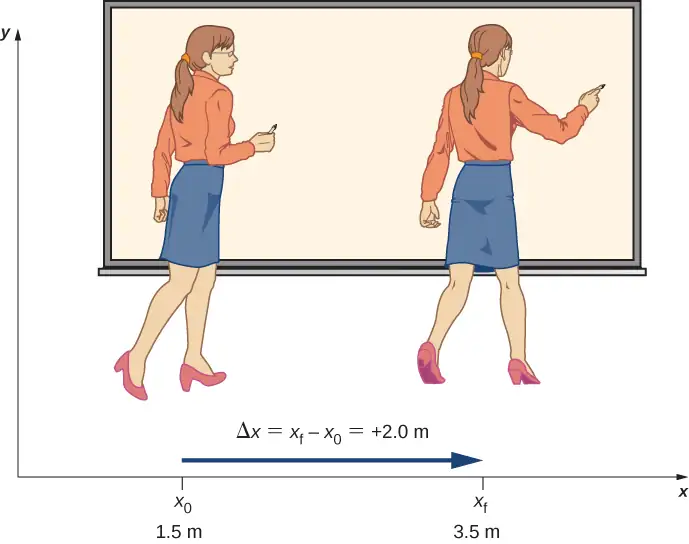
Displacement
Displacement \(\Delta x\) is the change in position of an object:
where \(\Delta x\) is displacement, \(x_{\text{f}}\) is the final position, and \(x_{0}\) is the initial position.
We use the uppercase Greek letter delta (Δ) to mean “change in” whatever quantity follows it; thus, \(\Delta x\) means change in position (final position less initial position). We always solve for displacement by subtracting initial position \(x_{0}\) from final position \(x_{\text{f}}\). Note that the SI unit for displacement is the meter, but sometimes we use kilometers or other units of length. Keep in mind that when units other than meters are used in a problem, you may need to convert them to meters to complete the calculation (see Appendix B).
Objects in motion can also have a series of displacements. In the previous example of the pacing professor, the individual displacements are 2 m and \(-4\) m, giving a total displacement of −2 m. We define total displacement \(\Delta x_{\text{Total}}\), as the sum of the individual displacements, and express this mathematically with the equation
equation callout
where \(\Delta x_{i}\) are the individual displacements. In the earlier example,
Similarly,
Thus,
The total displacement is 2 − 4 = −2 m along the x-axis. It is also useful to calculate the magnitude of the displacement, or its size. The magnitude of the displacement is always positive. This is the absolute value of the displacement, because displacement is a vector and cannot have a negative value of magnitude. In our example, the magnitude of the total displacement is 2 m, whereas the magnitudes of the individual displacements are 2 m and 4 m.
The magnitude of the total displacement should not be confused with the distance traveled. Distance traveled \(x_{\text{Total}}\), is the total length of the path traveled between two positions. In the previous problem, the distance traveled is the sum of the magnitudes of the individual displacements:
Average Velocity¶
To calculate the other physical quantities in kinematics we must introduce the time variable. The time variable allows us not only to state where the object is (its position) during its motion, but also how fast it is moving. How fast an object is moving is given by the rate at which the position changes with time.
For each position \(x_{\text{i}}\), we assign a particular time \(t_{\text{i}}\). If the details of the motion at each instant are not important, the rate is usually expressed as the average velocity \(\bar{v}\). This vector quantity is simply the total displacement between two points divided by the time taken to travel between them. The time taken to travel between two points is called the elapsed time \(\Delta t\).
Average Velocity
If \(x_{1}\) and \(x_{2}\) are the positions of an object at times \(t_{1}\) and \(t_{2}\), respectively, then
It is important to note that the average velocity is a vector and can be negative, depending on positions \(x_{1}\) and \(x_{2}\).
Example 3.1 Delivering Flyers
Jill sets out from her home to deliver flyers for her yard sale, traveling due east along her street lined with houses. At \(0.5\) km and 9 minutes later she runs out of flyers and has to retrace her steps back to her house to get more. This takes an additional 9 minutes. After picking up more flyers, she sets out again on the same path, continuing where she left off, and ends up 1.0 km from her house. This third leg of her trip takes \(15\) minutes. At this point she turns back toward her house, heading west. After \(1.75\) km and \(25\) minutes she stops to rest.
- What is Jill’s total displacement to the point where she stops to rest?
- What is the magnitude of the total displacement?
- What is the average velocity during her entire trip?
- What is the total distance traveled?
- Make a graph of position versus time.
A sketch of Jill’s movements is shown in Figure 3.4.
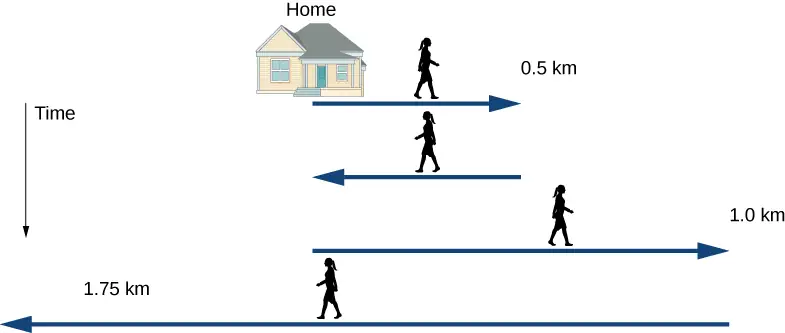
Strategy
The problem contains data on the various legs of Jill’s trip, so it would be useful to make a table of the physical quantities. We are given position and time in the wording of the problem so we can calculate the displacements and the elapsed time. We take east to be the positive direction. From this information we can find the total displacement and average velocity. Jill’s home is the starting point \(x_{0}\). The following table gives Jill’s time and position in the first two columns, and the displacements are calculated in the third column.
| Time ti (min) | Position \(x_{i}\) (km) | Displacement \(\Delta x_{\text{i}}\) (km) |
|---|---|---|
| \(t_{0}=0\) | \(x_{0}=0\) | \(\Delta x_{0}=0\) |
| \(t_{1}=9\) | \(x_{1}=0.5\) | \(\Delta x_{1}=x_{1}-x_{0}=0.5\) |
| \(t_{2}=18\) | \(x_{2}=0\) | \(\Delta x_{2}=x_{2}-x_{1}=-0.5\) |
| \(t_{3}=33\) | \(x_{3}=1.0\) | \(\Delta x_{3}=x_{3}-x_{2}=1.0\) |
| \(t_{4}=58\) | \(x_{4}=-0.75\) | \(\Delta x_{4}=x_{4}-x_{3}=-1.75\) |
Solution
a. From the above table, the total displacement is
b. The magnitude of the total displacement is \(|-0.75|\:\text{km}=0.75\:\text{km}\).
c. \(\text{Average velocity}=\frac{\text{Total}\:\text{displacement}}{\text{Elapsed}\:\text{time}}=\bar{v}=\frac{-0.75\:\text{km}}{58\:\min}=-0.013\:\text{km/min}\)
d. The total distance traveled (sum of magnitudes of individual displacements) is \(x_{\text{Total}}=\displaystyle \sum|\Delta x_{\text{i}}|=0.5+0.5+1.0+1.75\:\text{km}=3.75\:\text{km}\).
e. We can graph Jill’s position versus time as a useful aid to see the motion; the graph is shown in Figure 3.5.
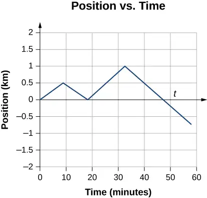
Significance
Jill’s total displacement is −0.75 km, which means at the end of her trip she ends up \(0.75\:\text{km}\) due west of her home. The average velocity means if someone was to walk due west at \(0.013\) km/min starting at the same time Jill left her home, they both would arrive at the final stopping point at the same time. Note that if Jill were to end her trip at her house, her total displacement would be zero, as well as her average velocity. The total distance traveled during the 58 minutes of elapsed time for her trip is 3.75 km.
Check Your Understanding
A cyclist rides 3 km west and then turns around and rides 2 km east. (a) What is their displacement? (b) What is the distance traveled? (c) What is the magnitude of their displacement?
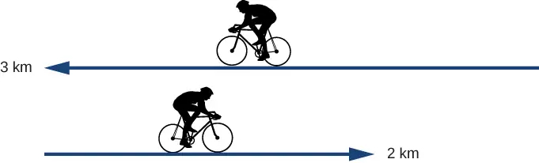
Answer
(a) The rider’s displacement is \(\Delta x=x_{\text{f}}-x_{0}=-1\:\text{km}\). (The displacement is negative because we take east to be positive and west to be negative.) (b) The distance traveled is 3 km + 2 km = 5 km. (c) The magnitude of the displacement is 1 km.
3.2 Instantaneous Velocity and Speed¶
Learning Objectives
By the end of this section, you will be able to:
- Explain the difference between average velocity and instantaneous velocity.
- Describe the difference between velocity and speed.
- Calculate the instantaneous velocity given the mathematical equation for the position.
- Calculate the speed given the instantaneous velocity.
We have now seen how to calculate the average velocity between two positions. However, since objects in the real world move continuously through space and time, we would like to find the velocity of an object at any single point. We can find the velocity of the object anywhere along its path by using some fundamental principles of calculus. This section gives us better insight into the physics of motion and will be useful in later chapters.
Instantaneous Velocity¶
The quantity that tells us how fast an object is moving anywhere along its path is the instantaneous velocity, usually called simply velocity. It is the average velocity between two points on the path in the limit that the time (and therefore the displacement) between the two events approaches zero. To illustrate this idea mathematically, we need to express position x as a continuous function of t denoted by x(t). The expression for the average velocity between two points using this notation is \(\bar{v}=\frac{x(t_{2})-x(t_{1})}{t_{2}-t_{1}}\). To find the instantaneous velocity at any position, we let \(t_{1}=t\) and \(t_{2}=t+\Delta t\). After inserting these expressions into the equation for the average velocity and taking the limit as \(\Delta t\rightarrow 0\), we find the expression for the instantaneous velocity:
Instantaneous Velocity
The instantaneous velocity of an object is the limit of the average velocity as the elapsed time approaches zero, or the derivative of x with respect to t:
Like average velocity, instantaneous velocity is a vector with dimension of length per time. The instantaneous velocity at a specific time point \(t_{0}\) is the rate of change of the position function, which is the slope of the position function \(x(t)\) at \(t_{0}\). Figure 3.6 shows how the average velocity \(\bar{v}=\frac{\Delta x}{\Delta t}\) between two times approaches the instantaneous velocity at \(t_{0}.\) The instantaneous velocity is shown at time \(t_{0}\), which happens to be at the maximum of the position function. The slope of the position graph is zero at this point, and thus the instantaneous velocity is zero. At other times, \(t_{1},t_{2}\), and so on, the instantaneous velocity is not zero because the slope of the position graph would be positive or negative. If the position function had a minimum, the slope of the position graph would also be zero, giving an instantaneous velocity of zero there as well. Thus, the zeros of the velocity function give the minimum and maximum of the position function.
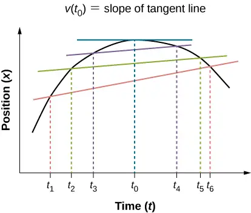
Example 3.2 Finding Velocity from a Position-Versus-Time Graph
Given the position-versus-time graph of Figure 3.7, find the velocity-versus-time graph.
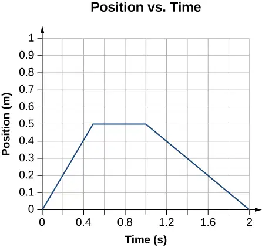
Strategy
The graph contains three straight lines during three time intervals. We find the velocity during each time interval by taking the slope of the line using the grid.
Solution
Time interval 0 s to 0.5 s: \(\bar{v}=\frac{\Delta x}{\Delta t}=\frac{0.5\:\text{m}-0.0\:\text{m}}{0.5\:\text{s}-0.0\:\text{s}}=1.0\:\text{m/s}\)
Time interval 0.5 s to 1.0 s: \(\bar{v}=\frac{\Delta x}{\Delta t}=\frac{0.5\:\text{m}-0.5\:\text{m}}{1.0\:\text{s}-0.5\:\text{s}}=0.0\:\text{m/s}\)
Time interval 1.0 s to 2.0 s: \(\bar{v}=\frac{\Delta x}{\Delta t}=\frac{0.0\:\text{m}-0.5\:\text{m}}{2.0\:\text{s}-1.0\:\text{s}}=-0.5\:\text{m/s}\)
The graph of these values of velocity versus time is shown in Figure 3.8.
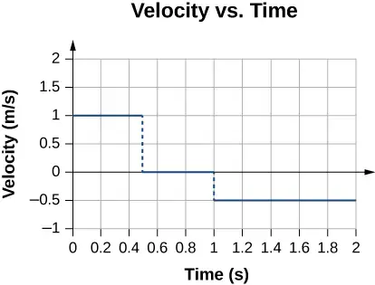
Significance
During the time interval between 0 s and 0.5 s, the object’s position is moving away from the origin and the position-versus-time curve has a positive slope. At any point along the curve during this time interval, we can find the instantaneous velocity by taking its slope, which is +1 m/s, as shown in Figure 3.8. In the subsequent time interval, between 0.5 s and 1.0 s, the position doesn’t change and we see the slope is zero. From 1.0 s to 2.0 s, the object is moving back toward the origin and the slope is −0.5 m/s. The object has reversed direction and has a negative velocity.
Speed¶
In everyday language, most people use the terms speed and velocity interchangeably. In physics, however, they do not have the same meaning and are distinct concepts. One major difference is that speed has no direction; that is, speed is a scalar.
We can calculate the average speed by finding the total distance traveled divided by the elapsed time:
equation callout
Average speed is not necessarily the same as the magnitude of the average velocity, which is found by dividing the magnitude of the total displacement by the elapsed time. For example, if a trip starts and ends at the same location, the total displacement is zero, and therefore the average velocity is zero. The average speed, however, is not zero, because the total distance traveled is greater than zero. If we take a road trip of 300 km and need to be at our destination at a certain time, then we would be interested in our average speed.
However, we can calculate the instantaneous speed from the magnitude of the instantaneous velocity:
equation callout
If a particle is moving along the x-axis at +7.0 m/s and another particle is moving along the same axis at −7.0 m/s, they have different velocities, but both have the same speed of 7.0 m/s. Some typical speeds are shown in the following table.
Table 3.1 Speeds of Various Objects *Escape velocity is the velocity at which an object must be launched so that it overcomes Earth’s gravity and is not pulled back toward Earth.
| Speed | m/s | mi/h |
|---|---|---|
| Continental drift | \({10}^{-9}\) | \(2\:\times\:{10}^{-9}\) |
| Brisk walk | 1.7 | 3.9 |
| Cyclist | 4.4 | 10 |
| Sprint runner | 12.2 | 27 |
| Rural speed limit | 24.6 | 56 |
| Official land speed record | 341.1 | 763 |
| Speed of sound at sea level | 343 | 768 |
| Space shuttle on reentry | 7800 | 17,500 |
| Escape velocity of Earth* | 11,200 | 25,000 |
| Orbital speed of Earth around the Sun | 29,783 | 66,623 |
| Speed of light in a vacuum | 299,792,458 | 670,616,629 |
Calculating Instantaneous Velocity¶
When calculating instantaneous velocity, we need to specify the explicit form of the position function \(x(t)\). If each term in the \(x(t)\) equation has the form of \(At^{n}\) where \(A\) is a constant and \(n\) is an integer, this can be differentiated using the power rule to be:
equation callout
Note that if there are additional terms added together, this power rule of differentiation can be done multiple times and the solution is the sum of those terms. The following example illustrates the use of Equation 3.7.
Example 3.3 Instantaneous Velocity Versus Average Velocity
The position of a particle is given by \(x(t)=(3.0\:\text{m/s})t\:+\:(0.50\:\text{m/s}^{3})t^{3}\).
- Using Equation 3.4 and Equation 3.7, find the instantaneous velocity at \(t=2.0\) s.
- Calculate the average velocity between 1.0 s and 3.0 s.
Strategy
Equation 3.4 gives the instantaneous velocity of the particle as the derivative of the position function. Looking at the form of the position function given, we see that it is a polynomial in t. Therefore, we can use Equation 3.7, the power rule from calculus, to find the solution. We use Equation 3.6 to calculate the average velocity of the particle.
Solution
a. \(v(t)=\frac{dx(t)}{dt}=(3.0\:\text{m/s})+(1.5\:\text{m/s}^{3})t^{2}\).
Substituting t = 2.0 s into this equation gives \(v(2.0\:\text{s})=(3.0\:\text{m/s})+(1.5\:\text{m/s}^{3}){(2.0\,s)}^{2}=9.0\:\text{m/s}\).
b. To determine the average velocity of the particle between 1.0 s and 3.0 s, we calculate the values of x(1.0 s) and x(3.0 s):
Then the average velocity is
Significance
In the limit that the time interval used to calculate \(\bar{v}\) goes to zero, the value obtained for \(\bar{v}\) converges to the value of v. The value of \(9.0\:\text{m/s}\) that we calculated in part a for the instantaneous value at \(t=2.0\:\text{s}\) is close to the average value of \(9.5\:\text{m/s}\) found in b for a short interval that includes \(t=2.0\:\text{s}\). If we were to make the interval shorter, the values in the calculation of the average would become even closer.
Example 3.4 Instantaneous Velocity Versus Speed
Consider the motion of a particle in which the position is \(x(t)=(3.0\:\text{m/s})t\:-\:(3\:\text{m/s}^{2})t^{2}\).
- What is the instantaneous velocity at t = 0.25 s, t = 0.50 s, and t = 1.0 s?
- What is the speed of the particle at these times?
Strategy
The instantaneous velocity is the derivative of the position function and the speed is the magnitude of the instantaneous velocity. We use Equation 3.4 and Equation 3.7 to solve for instantaneous velocity.
Solution
- \(v(t)=\frac{dx(t)}{dt}=(3.0\:\text{m/s}\:-\:6.0\:\text{m/s}^{2}t),\:v(0.25\:\text{s})\:=1.50\:\text{m/s,}\)
\(v(0.5\:\text{s})=0\:\text{m/s,}\;v(1.0\:\text{s})=-3.0\:\text{m/s}\) - \(\text{Speed}=|v(t)|=1.50\:\text{m/s},0.0\:\text{m/s,}\:\text{and}\:3.0\:\text{m/s}\)
Significance
The velocity of the particle gives us direction information, indicating the particle is moving to the left (west) or right (east). The speed gives the magnitude of the velocity. By graphing the position, velocity, and speed as functions of time, we can understand these concepts visually Figure 3.9. In (a), the graph shows the particle moving in the positive direction until t = 0.5 s, when it reverses direction. The reversal of direction can also be seen in (b) at 0.5 s where the velocity is zero and then turns negative. At 1.0 s it is back at the origin where it started. The particle’s velocity at 1.0 s in (b) is negative, because it is traveling in the negative direction. But in (c), however, its speed is positive and remains positive throughout the travel time. We can also interpret velocity as the slope of the position-versus-time graph. The slope of x(t) is decreasing toward zero, becoming zero at 0.5 s and increasingly negative thereafter. This analysis of comparing the graphs of position, velocity, and speed helps catch errors in calculations. The graphs must be consistent with each other and help interpret the calculations.
![Graph A shows position in meters plotted versus time in seconds. It starts at the origin, reaches maximum at 0.5 seconds, and then start to decrease crossing x axis at 1 second. Graph B shows velocity in meters per second plotted as a function of time at seconds. Velocity linearly decreases from the left to the right. Graph C shows absolute velocity in meters per second plotted as a function of time at seconds. Graph has a V-leeter shape. Velocity decreases till 0.5 seconds; then it starts to increase.](img/cnx-uphysics-03-02-posvelsp.webp)
Check Your Understanding
The position of an object as a function of time is \(x(t)=\:(-3\:\text{m/s}^{2})t^{2}\). (a) What is the velocity of the object as a function of time? (b) Is the velocity ever positive? (c) What are the velocity and speed at t = 1.0 s?
Answer
(a) Taking the derivative of x(t) gives v(t) = −6t m/s. (b) No, because time can never be negative. (c) The velocity is v(1.0 s) = −6 m/s and the speed is \(|v(1.0\:\text{s})|=6\:\text{m/s}\).
3.3 Average and Instantaneous Acceleration¶
Learning Objectives
By the end of this section, you will be able to:
- Calculate the average acceleration between two points in time.
- Calculate the instantaneous acceleration given the functional form of velocity.
- Explain the vector nature of instantaneous acceleration and velocity.
- Explain the difference between average acceleration and instantaneous acceleration.
- Find instantaneous acceleration at a specified time on a graph of velocity versus time.
The importance of understanding acceleration spans our day-to-day experience, as well as the vast reaches of outer space and the tiny world of subatomic physics. In everyday conversation, to accelerate means to speed up; applying the brake pedal causes a vehicle to slow down. We are familiar with the acceleration of our car, for example. The greater the acceleration, the greater the change in velocity over a given time. Acceleration is widely seen in experimental physics. In linear particle accelerator experiments, for example, subatomic particles are accelerated to very high velocities in collision experiments, which tell us information about the structure of the subatomic world as well as the origin of the universe. In space, cosmic rays are subatomic particles that have been accelerated to very high energies in supernovas (exploding massive stars) and active galactic nuclei. It is important to understand the processes that accelerate cosmic rays because these rays contain highly penetrating radiation that can damage electronics flown on spacecraft, for example.
Average Acceleration¶
The formal definition of acceleration is consistent with these notions just described, but is more inclusive.
Average Acceleration
Average acceleration is the rate at which velocity changes:
where \(\bar{a}\) is average acceleration, v is velocity, and t is time. (The bar over the a means average acceleration.)
Because acceleration is velocity in meters per second divided by time in seconds, the SI units for acceleration are often abbreviated m/s2—that is, meters per second squared or meters per second per second. This literally means by how many meters per second the velocity changes every second. Recall that velocity is a vector—it has both magnitude and direction—which means that a change in velocity can be a change in magnitude (or speed), but it can also be a change in direction. For example, if a runner traveling at 10 km/h due east slows to a stop, reverses direction, and continues her run at 10 km/h due west, her velocity has changed as a result of the change in direction, although the magnitude of the velocity is the same in both directions. Thus, acceleration occurs when velocity changes in magnitude (an increase or decrease in speed) or in direction, or both.
Acceleration as a Vector
Acceleration is a vector in the same direction as the change in velocity, \(\Delta v\). Since velocity is a vector, it can change in magnitude or in direction, or both. Acceleration is, therefore, a change in speed or direction, or both.
Keep in mind that although acceleration is in the direction of the change in velocity, it is not always in the direction of motion. When an object slows down, its acceleration is opposite to the direction of its motion. Although this is commonly referred to as deceleration Figure 3.10, we say the train is accelerating in a direction opposite to its direction of motion.
The term deceleration can cause confusion in our analysis because it is not a vector and it does not point to a specific direction with respect to a coordinate system, so we do not use it. Acceleration is a vector, so we must choose the appropriate sign for it in our chosen coordinate system. In the case of the train in Figure 3.10, acceleration is in the negative direction in the chosen coordinate system, so we say the train is undergoing negative acceleration.
If an object in motion has a velocity in the positive direction with respect to a chosen origin and it acquires a constant negative acceleration, the object eventually comes to a rest and reverses direction. If we wait long enough, the object passes through the origin going in the opposite direction. This is illustrated in Figure 3.11.
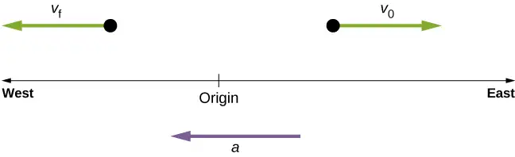
Example 3.5 Calculating Average Acceleration: A Racehorse Leaves the Gate
A racehorse coming out of the gate accelerates from rest to a velocity of 15.0 m/s due west in 1.80 s. What is its average acceleration?
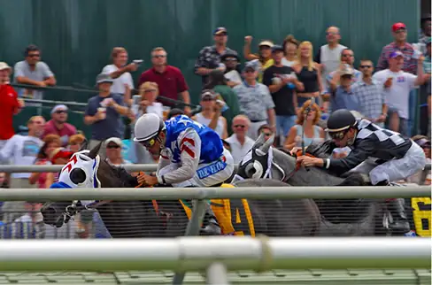
Strategy
First we draw a sketch and assign a coordinate system to the problem Figure 3.13. This is a simple problem, but it always helps to visualize it. Notice that we assign east as positive and west as negative. Thus, in this case, we have negative velocity.
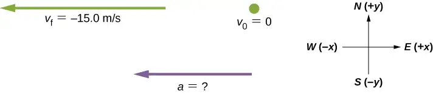
We can solve this problem by identifying \(\Delta v\:\text{and}\:\Delta t\) from the given information, and then calculating the average acceleration directly from the equation \(\bar{a}=\frac{\Delta v}{\Delta t}=\frac{v_{\text{f}}-v_{0}}{t_{\text{f}}-t_{0}}\).
Solution
First, identify the knowns: \(v_{0}=0,v_{\text{f}}=-15.0\:\text{m/s}\) (the negative sign indicates direction toward the west), Δt = 1.80 s.
Second, find the change in velocity. Since the horse is going from zero to –15.0 m/s, its change in velocity equals its final velocity:
Last, substitute the known values (\(\Delta v\:\text{and}\:\Delta t\)) and solve for the unknown \(\bar{a}\):
Significance
The negative sign for acceleration indicates that acceleration is toward the west. An acceleration of 8.33 m/s2 due west means the horse increases its velocity by 8.33 m/s due west each second; that is, 8.33 meters per second per second, which we write as 8.33 m/s2. This is truly an average acceleration, because the ride is not smooth. We see later that an acceleration of this magnitude would require the rider to hang on with a force nearly equal to his weight.
Check Your Understanding
Protons in a linear accelerator are accelerated from rest to \(2.0\:\times\:{10}^{7}\:\text{m/s}\) in 10–4 s. What is the average acceleration of the protons?
Answer
Inserting the knowns, we have
\(\bar{a}=\frac{\Delta v}{\Delta t}=\frac{2.0\:\times\:{10}^{7}\:\text{m/s}-0}{{10}^{-4}\:\text{s}-0}=2.0\:\times\:{10}^{11}\text{m/s}^{2}.\)
Instantaneous Acceleration¶
Instantaneous acceleration a, or acceleration at a specific instant in time, is obtained using the same process discussed for instantaneous velocity. That is, we calculate the average acceleration between two points in time separated by \(\Delta t\) and let \(\Delta t\) approach zero. The result is the derivative of the velocity function v(t), which is instantaneous acceleration and is expressed mathematically as
equation callout
Thus, similar to velocity being the derivative of the position function, instantaneous acceleration is the derivative of the velocity function. We can show this graphically in the same way as instantaneous velocity. In Figure 3.14, instantaneous acceleration at time t0 is the slope of the tangent line to the velocity-versus-time graph at time t0. We see that average acceleration \(\bar{a}=\frac{\Delta v}{\Delta t}\) approaches instantaneous acceleration as \(\Delta t\) approaches zero. Also in part (a) of the figure, we see that velocity has a maximum when its slope is zero. This time corresponds to the zero of the acceleration function. In part (b), instantaneous acceleration at the minimum velocity is shown, which is also zero, since the slope of the curve is zero there, too. Thus, for a given velocity function, the zeros of the acceleration function give either the minimum or the maximum velocity.

To illustrate this concept, let’s look at two examples. First, a simple example is shown using Figure 3.9(b), the velocity-versus-time graph of Example 3.4, to find acceleration graphically. This graph is depicted in Figure 3.15(a), which is a straight line. The corresponding graph of acceleration versus time is found from the slope of velocity and is shown in Figure 3.15(b). In this example, the velocity function is a straight line with a constant slope, thus acceleration is a constant. In the next example, the velocity function has a more complicated functional dependence on time.
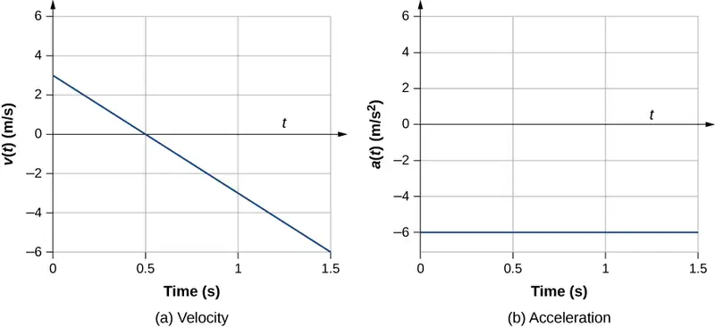
If we know the functional form of velocity, v(t), we can calculate instantaneous acceleration a(t) at any time point in the motion using Equation 3.9.
Example 3.6 Calculating Instantaneous Acceleration
A particle is in motion and is accelerating. The functional form of the velocity is \(v(t)=(20\:\text{m/s}^{2})t\:-\:\text{(5}\:\text{m/s}^{3}\text{)}t^{2}\).
- Find the functional form of the acceleration.
- Find the instantaneous velocity at t = 1, 2, 3, and 5 s.
- Find the instantaneous acceleration at t = 1, 2, 3, and 5 s.
- Interpret the results of (c) in terms of the directions of the acceleration and velocity vectors.
Strategy
We find the functional form of acceleration by taking the derivative of the velocity function. Then, we calculate the values of instantaneous velocity and acceleration from the given functions for each. For part (d), we need to compare the directions of velocity and acceleration at each time.
Solution
- \(a(t)=\frac{dv(t)}{dt}=(20\:\text{m/s}^{2}\text{)}\:-\:(10\:\text{m/s}^{3})t\)
- \(v(1\:\text{s})=15\:\text{m/s}\), \(v(2\:\text{s})=20\:\text{m/s}\), \(v(3\:\text{s})=15\:\text{m/s}\), \(v(5\:\text{s})=-25\:\text{m/s}\)
- \(a(1\:\ \text{s})=10{\:\ \text{m/s}}^{2}\), \(a(2\:\ \text{s})=0{\:\text{m/s}}^{2}\), \(a(3\:\ \text{s})=-10{\:\text{m/s}}^{2}\), \(a(5\:\text{s})=-30{\:\text{m/s}}^{2}\)
- At t = 1 s, velocity \(v(1\:\text{s)}=15\:\text{m/s}\) is positive and acceleration is positive, so both velocity and acceleration are in the same direction. The particle is moving faster.
At t = 2 s, velocity has increased to\(v(2\:\text{s)}=20\:\text{m/s}\), where it is maximum, which corresponds to the time when the acceleration is zero. We see that the maximum velocity occurs when the slope of the velocity function is zero, which is just the zero of the acceleration function.
At t = 3 s, velocity is \(v(3\:\text{s)}=15\:\text{m/s}\) and acceleration is negative. The particle has reduced its velocity and the acceleration vector is negative. The particle is slowing down.
At t = 5 s, velocity is \(v(5\:\text{s)}=-25\:\text{m/s}\) and acceleration is increasingly negative. Between the times t = 3 s and t = 5 s the particle has decreased its velocity to zero and then become negative, thus reversing its direction. The particle is now speeding up again, but in the opposite direction.
We can see these results graphically in Figure 3.16.
![Graph A shows velocity in meters per second plotted versus time in seconds. Velocity starts at zero, increases to 15 at 1 second, and reaches maximum of 20 at 2 seconds. It decreases to 15 at 3 seconds and continues to decrease to -25 at 5 seconds. Graph B shows acceleration in meters per second squared plotted versus time in seconds. Graph is linear and has a negative constant slope. Acceleration starts at 20 when time is zero, decreases to 10 at 1 second, to zero at 2 seconds, to -10 at 3 seconds, and to -30 and 5 seconds.](img/cnx-uphysics-03-03-velacc.webp)
Significance
By doing both a numerical and graphical analysis of velocity and acceleration of the particle, we can learn much about its motion. The numerical analysis complements the graphical analysis in giving a total view of the motion. The zero of the acceleration function corresponds to the maximum of the velocity in this example. Also in this example, when acceleration is positive and in the same direction as velocity, velocity increases. As acceleration tends toward zero, eventually becoming negative, the velocity reaches a maximum, after which it starts decreasing. If we wait long enough, velocity also becomes negative, indicating a reversal of direction. A real-world example of this type of motion is a car with a velocity that is increasing to a maximum, after which it starts slowing down, comes to a stop, then reverses direction.
Check Your Understanding
An airplane lands on a runway traveling east. Describe its acceleration.
Answer
If we take east to be positive, then the airplane has negative acceleration because it is accelerating toward the west. It is also acceleration opposite to the motion; its acceleration is opposite in direction to its velocity.
Getting a Feel for Acceleration¶
You are probably used to experiencing acceleration when you step into an elevator, or step on the gas pedal in your car. However, acceleration is happening to many other objects in our universe with which we don’t have direct contact. Table 3.2 presents the acceleration of various objects. We can see the magnitudes of the accelerations extend over many orders of magnitude.
Table 3.2 Typical Values of Acceleration (credit: Wikipedia: Orders of Magnitude (acceleration))
| Acceleration | Value (m/s2) |
|---|---|
| High-speed train | 0.25 |
| Elevator | 2 |
| Cheetah | 5 |
| Object in a free fall without air resistance near the surface of Earth | 9.8 |
| Space shuttle maximum during launch | 29 |
| Parachutist peak during normal opening of parachute | 59 |
| F16 aircraft pulling out of a dive | 79 |
| Explosive seat ejection from aircraft | 147 |
| Sprint missile | 982 |
| Fastest rocket sled peak acceleration | 1540 |
| Jumping flea | 3200 |
| Baseball struck by a bat | 30,000 |
| Closing jaws of a trap-jaw ant | 1,000,000 |
| Proton in the large Hadron collider | \(1.9\:\times\:{10}^{9}\) |
In this table, we see that typical accelerations vary widely with different objects and have nothing to do with object size or how massive it is. Acceleration can also vary widely with time during the motion of an object. A drag racer has a large acceleration just after its start, but then it tapers off as the vehicle reaches a constant velocity. Its average acceleration can be quite different from its instantaneous acceleration at a particular time during its motion. Figure 3.17 compares graphically average acceleration with instantaneous acceleration for two very different motions.
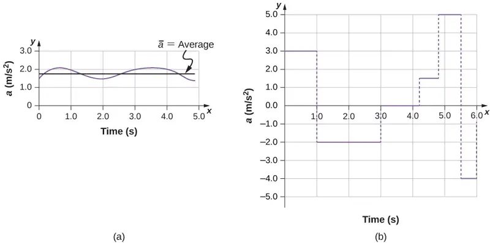
Media
Learn about position, velocity, and acceleration graphs. Move the little man back and forth with a mouse and plot his motion. Set the position, velocity, or acceleration and let the simulation move the man for you. Visit this link to use the moving man simulation.
3.4 Motion with Constant Acceleration¶
Learning Objectives
By the end of this section, you will be able to:
- Identify which equations of motion are to be used to solve for unknowns.
- Use appropriate equations of motion to solve a two-body pursuit problem.
You might guess that the greater the acceleration of a car moving away from a stop sign, the greater the car’s displacement in a given time. But, we have not developed a specific equation that relates acceleration and displacement. In this section, we look at some convenient equations for kinematic relationships, starting from the definitions of displacement, velocity, and acceleration. We first investigate a single object in motion, called single-body motion. Then we investigate the motion of two objects, called two-body pursuit problems.
Notation¶
First, let us make some simplifications in notation. Taking the initial time to be zero, as if time is measured with a stopwatch, is a great simplification. Since elapsed time is \(\Delta t=t_{\text{f}}-t_{0}\), taking \(t_{0}=0\) means that\(\Delta t=t_{\text{f}}\), the final time on the stopwatch. When initial time is taken to be zero, we use the subscript 0 to denote initial values of position and velocity. That is, \(x_{0}\) is the initial position and \(v_{0}\) is the initial velocity. We put no subscripts on the final values. That is, t is the final time, x is the final position, and v is the final velocity. This gives a simpler expression for elapsed time, \(\Delta t=t\). It also simplifies the expression for x displacement, which is now \(\Delta x=x-x_{0}\). Also, it simplifies the expression for change in velocity, which is now \(\Delta v=v-v_{0}\). To summarize, using the simplified notation, with the initial time taken to be zero,
where the subscript 0 denotes an initial value and the absence of a subscript denotes a final value in whatever motion is under consideration.
We now make the important assumption that acceleration is constant. This assumption allows us to avoid using calculus to find instantaneous acceleration. Since acceleration is constant, the average and instantaneous accelerations are equal—that is,
Thus, we can use the symbol a for acceleration at all times. Assuming acceleration to be constant does not seriously limit the situations we can study nor does it degrade the accuracy of our treatment. For one thing, acceleration is constant in a great number of situations. Furthermore, in many other situations we can describe motion accurately by assuming a constant acceleration equal to the average acceleration for that motion. Lastly, for motion during which acceleration changes drastically, such as a car accelerating to top speed and then braking to a stop, motion can be considered in separate parts, each of which has its own constant acceleration.
Displacement and Position from Velocity¶
To get our first two equations, we start with the definition of average velocity:
Substituting the simplified notation for \(\Delta x\) and \(\Delta t\) yields
Solving for x gives us
equation callout
where the average velocity is
equation callout
The equation \(\bar{v}=\frac{v_{0}+v}{2}\) reflects the fact that when acceleration is constant, \(\bar{v}\) is just the simple average of the initial and final velocities. Figure 3.18 illustrates this concept graphically. In part (a) of the figure, acceleration is constant, with velocity increasing at a constant rate. The average velocity during the 1-h interval from 40 km/h to 80 km/h is 60 km/h:
In part (b), acceleration is not constant. During the 1-h interval, velocity is closer to 80 km/h than 40 km/h. Thus, the average velocity is greater than in part (a).
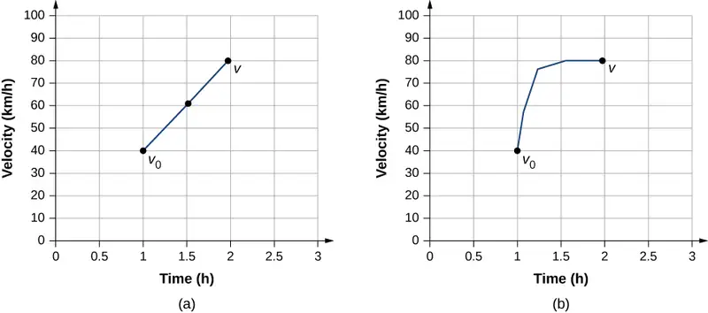
Solving for Final Velocity from Acceleration and Time¶
We can derive another useful equation by manipulating the definition of acceleration:
Substituting the simplified notation for \(\Delta v\) and \(\Delta t\) gives us
Solving for v yields
equation callout
Example 3.7 Calculating Final Velocity
An airplane lands with an initial velocity of 70.0 m/s and then accelerates opposite to the motion at 1.50 m/s2 for 40.0 s. What is its final velocity?
Strategy
First, we identify the knowns: \(v_{0}=70\:\text{m/s,}\:a=-1.50{\:\text{m/s}}^{2},t=40\:\text{s}\).
Second, we identify the unknown; in this case, it is final velocity \(v_{\text{f}}\).
Last, we determine which equation to use. To do this we figure out which kinematic equation gives the unknown in terms of the knowns. We calculate the final velocity using Equation 3.12, \(v=v_{0}+at\).
Solution
Substitute the known values and solve:
Figure 3.19 is a sketch that shows the acceleration and velocity vectors.
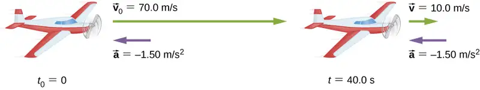
Significance
The final velocity is much less than the initial velocity, as desired when slowing down, but is still positive (see figure). With jet engines, reverse thrust can be maintained long enough to stop the plane and start moving it backward, which is indicated by a negative final velocity, but is not the case here.
In addition to being useful in problem solving, the equation \(v=v_{0}+at\) gives us insight into the relationships among velocity, acceleration, and time. We can see, for example, that
- Final velocity depends on how large the acceleration is and how long it lasts
- If the acceleration is zero, then the final velocity equals the initial velocity (v = v0), as expected (in other words, velocity is constant)
- If a is negative, then the final velocity is less than the initial velocity
All these observations fit our intuition. Note that it is always useful to examine basic equations in light of our intuition and experience to check that they do indeed describe nature accurately.
Solving for Final Position with Constant Acceleration¶
We can combine the previous equations to find a third equation that allows us to calculate the final position of an object experiencing constant acceleration. We start with
Adding \(v_{0}\) to each side of this equation and dividing by 2 gives
Since \(\frac{v_{0}+v}{2}=\bar{v}\) for constant acceleration, we have
Now we substitute this expression for \(\bar{v}\) into the equation for displacement, \(x=x_{0}+\bar{v}t\), yielding
equation callout
Example 3.8 Calculating Displacement of an Accelerating Object
Dragsters can achieve an average acceleration of 26.0 m/s2. Suppose a dragster accelerates from rest at this rate for 5.56 s (Figure 3.20). How far does it travel in this time?
Strategy
First, let’s draw a sketch (Figure 3.21). We are asked to find displacement, which is x if we take \(x_{0}\) to be zero. (Think about \(x_{0}\) as the starting line of a race. It can be anywhere, but we call it zero and measure all other positions relative to it.) We can use the equation \(x=x_{0}+v_{0}t+\frac{1}{2}at^{2}\) when we identify \(v_{0}\), \(a\), and t from the statement of the problem.
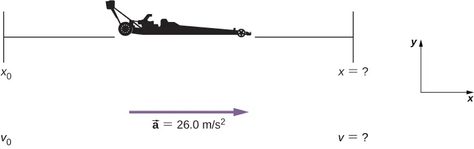
Solution
First, we need to identify the knowns. Starting from rest means that \(v_{0}=0\), a is given as 26.0 m/s2 and t is given as 5.56 s.
Second, we substitute the known values into the equation to solve for the unknown:
Since the initial position and velocity are both zero, this equation simplifies to
Substituting the identified values of a and t gives
Significance
If we convert 402 m to miles, we find that the distance covered is very close to one-quarter of a mile, the standard distance for drag racing. So, our answer is reasonable. This is an impressive displacement to cover in only 5.56 s, but top-notch dragsters can do a quarter mile in even less time than this. If the dragster were given an initial velocity, this would add another term to the distance equation. If the same acceleration and time are used in the equation, the distance covered would be much greater.
What else can we learn by examining the equation \(x=x_{0}+v_{0}t+\frac{1}{2}at^{2}?\) We can see the following relationships:
- Displacement depends on the square of the elapsed time when acceleration is not zero. In Example 3.8, the dragster covers only one-fourth of the total distance in the first half of the elapsed time.
- If acceleration is zero, then initial velocity equals average velocity \((v_{0}=\bar{v})\), and \(x=x_{0}+v_{0}t+\frac{1}{2}\,at^{2}\:\text{becomes}\:x=x_{0}+v_{0}t.\)
Solving for Final Velocity from Distance and Acceleration¶
A fourth useful equation can be obtained from another algebraic manipulation of previous equations. If we solve \(v=v_{0}+at\) for t, we get
Substituting this and \(\bar{v}=\frac{v_{0}+v}{2}\) into \(x=x_{0}+\bar{v}t\), we get
equation callout
Example 3.9 Calculating Final Velocity
Calculate the final velocity of the dragster in Example 3.8 without using information about time.
Strategy
The equation \(v^{2}=v_{0}^{2}+2a(x-x_{0})\) is ideally suited to this task because it relates velocities, acceleration, and displacement, and no time information is required.
Solution
First, we identify the known values. We know that v0 = 0, since the dragster starts from rest. We also know that x − x0 = 402 m (this was the answer in Example 3.8). The average acceleration was given by a = 26.0 m/s2.
Second, we substitute the knowns into the equation \(v^{2}=v_{0}^{2}+2a(x-x_{0})\) and solve for v:
Thus,
Significance
A velocity of 145 m/s is about 522 km/h, or about 324 mi/h, but even this breakneck speed is short of the record for the quarter mile. Also, note that a square root has two values; we took the positive value to indicate a velocity in the same direction as the acceleration.
An examination of the equation \(v^{2}=v_{0}^{2}+2a(x-x_{0})\) can produce additional insights into the general relationships among physical quantities:
- The final velocity depends on how large the acceleration is and the distance over which it acts.
- For a fixed acceleration, a car that is going twice as fast doesn’t simply stop in twice the distance. It takes much farther to stop. (This is why we have reduced speed zones near schools.)
Putting Equations Together¶
In the following examples, we continue to explore one-dimensional motion, but in situations requiring slightly more algebraic manipulation. The examples also give insight into problem-solving techniques. The note that follows is provided for easy reference to the equations needed. Be aware that these equations are not independent. In many situations we have two unknowns and need two equations from the set to solve for the unknowns. We need as many equations as there are unknowns to solve a given situation.
Summary of Kinematic Equations (constant a)
Before we get into the examples, let’s look at some of the equations more closely to see the behavior of acceleration at extreme values. Rearranging Equation 3.12, we have
From this we see that, for a finite time, if the difference between the initial and final velocities is small, the acceleration is small, approaching zero in the limit that the initial and final velocities are equal. On the contrary, in the limit \(t\rightarrow 0\) for a finite difference between the initial and final velocities, acceleration becomes infinite.
Similarly, rearranging Equation 3.14, we can express acceleration in terms of velocities and displacement:
Thus, for a finite difference between the initial and final velocities acceleration becomes infinite in the limit the displacement approaches zero. Acceleration approaches zero in the limit the difference in initial and final velocities approaches zero for a finite displacement.
Example 3.10 How Far Does a Car Go?
On dry concrete, a car can accelerate opposite to the motion at a rate of 7.00 m/s2, whereas on wet concrete it can accelerate opposite to the motion at only 5.00 m/s2. Find the distances necessary to stop a car moving at 30.0 m/s (about 110 km/h) on (a) dry concrete and (b) wet concrete. (c) Repeat both calculations and find the displacement from the point where the driver sees a traffic light turn red, taking into account their reaction time of 0.500 s to get their foot on the brake.
Strategy
First, we need to draw a sketch Figure 3.22. To determine which equations are best to use, we need to list all the known values and identify exactly what we need to solve for.
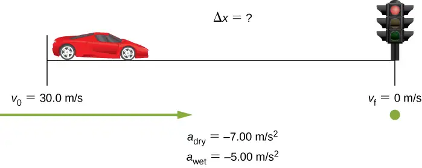
Solution
a. First, we need to identify the knowns and what we want to solve for. We know that v0 = 30.0 m/s, v = 0, and a = −7.00 m/s2 (a is negative because it is in a direction opposite to velocity). We take x0 to be zero. We are looking for displacement \(\Delta x\), or x − x0.
Second, we identify the equation that will help us solve the problem. The best equation to use is
This equation is best because it includes only one unknown, x. We know the values of all the other variables in this equation. (Other equations would allow us to solve for x, but they require us to know the stopping time, t, which we do not know. We could use them, but it would entail additional calculations.)
Third, we rearrange the equation to solve for x:
and substitute the known values:
Thus,
b. This part can be solved in exactly the same manner as (a). The only difference is that the acceleration is −5.00 m/s2. The result is
c. When the driver reacts, the stopping distance is the same as it is in (a) and (b) for dry and wet concrete. So, to answer this question, we need to calculate how far the car travels during the reaction time, and then add that to the stopping time. It is reasonable to assume the velocity remains constant during the driver’s reaction time.
To do this, we, again, identify the knowns and what we want to solve for. We know that \(\bar{v}=30.0\:\text{m/s}\), \(t_{\text{reaction}}=0.500\:\text{s}\), and \(a_{\text{reaction}}=0\). We take \(x_{\text{0-reaction}}\) to be zero. We are looking for \(x_{\text{reaction}}\).
Second, as before, we identify the best equation to use. In this case, \(x=x_{0}+\bar{v}t\) works well because the only unknown value is x, which is what we want to solve for.
Third, we substitute the knowns to solve the equation:
This means the car travels 15.0 m while the driver reacts, making the total displacements in the two cases of dry and wet concrete 15.0 m greater than if he reacted instantly.
Last, we then add the displacement during the reaction time to the displacement when braking (Figure 3.23),
and find (a) to be 64.3 m + 15.0 m = 79.3 m when dry and (b) to be 90.0 m + 15.0 m = 105 m when wet.
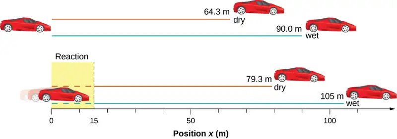
Significance
The displacements found in this example seem reasonable for stopping a fast-moving car. It should take longer to stop a car on wet pavement than dry. It is interesting that reaction time adds significantly to the displacements, but more important is the general approach to solving problems. We identify the knowns and the quantities to be determined, then find an appropriate equation. If there is more than one unknown, we need as many independent equations as there are unknowns to solve. There is often more than one way to solve a problem. The various parts of this example can, in fact, be solved by other methods, but the solutions presented here are the shortest.
Example 3.11 Calculating Time
Suppose a car merges into freeway traffic on a 200-m-long ramp. If its initial velocity is 10.0 m/s and it accelerates at 2.00 m/s2, how long does it take the car to travel the 200 m up the ramp? (Such information might be useful to a traffic engineer.)
Strategy
First, we draw a sketch Figure 3.24. We are asked to solve for time t. As before, we identify the known quantities to choose a convenient physical relationship (that is, an equation with one unknown, t.)
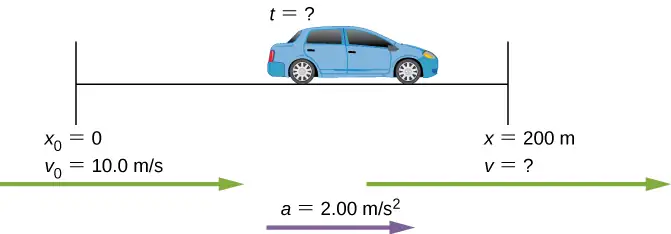
Solution
Again, we identify the knowns and what we want to solve for. We know that \(x_{0}=0,\)
\(v_{0}=10\:\text{m/s},a=2.00\:\text{m/}\text{s}^{2}\), and x = 200 m.
We need to solve for t. The equation \(x=x_{0}+v_{0}t+\frac{1}{2}at^{2}\) works best because the only unknown in the equation is the variable t, for which we need to solve. From this insight we see that when we input the knowns into the equation, we end up with a quadratic equation.
We need to rearrange the equation to solve for t, then substituting the knowns into the equation:
We then simplify the equation. The units of meters cancel because they are in each term. We can get the units of seconds to cancel by taking t = t s, where t is the magnitude of time and s is the unit. Doing so leaves
We then use the quadratic formula to solve for t,
which yields two solutions: t = 10.0 and t = −20.0. A negative value for time is unreasonable, since it would mean the event happened 20 s before the motion began. We can discard that solution. Thus,
Significance
Whenever an equation contains an unknown squared, there are two solutions. In some problems both solutions are meaningful; in others, only one solution is reasonable. The 10.0-s answer seems reasonable for a typical freeway on-ramp.
Check Your Understanding
A rocket accelerates at a rate of 20 m/s2 during launch. How long does it take the rocket to reach a velocity of 400 m/s?
Answer
To answer this, choose an equation that allows us to solve for time t, given only a , v0 , and v:
\(v=v_{0}+at.\)
Rearrange to solve for t:
\(t=\frac{v-v_{0}}{a}=\frac{400\:\text{m/s}-0\:\text{m/s}}{20{\:\text{m/s}}^{2}}=20\:\text{s}.\)
Example 3.12 Acceleration of a Spaceship
A spaceship has left Earth’s orbit and is on its way to the Moon. It accelerates at 20 m/s2 for 2 min and covers a distance of 1000 km. What are the initial and final velocities of the spaceship?
Strategy
We are asked to find the initial and final velocities of the spaceship. Looking at the kinematic equations, we see that one equation will not give the answer. We must use one kinematic equation to solve for one of the velocities and substitute it into another kinematic equation to get the second velocity. Thus, we solve two of the kinematic equations simultaneously.
Solution
First we solve for \(v_{0}\) using \(x=x_{0}+v_{0}t+\frac{1}{2}at^{2}:\)
Then we substitute \(v_{0}\) into \(v=v_{0}+at\) to solve for the final velocity:
Significance
There are six variables in displacement, time, velocity, and acceleration that describe motion in one dimension. The initial conditions of a given problem can be many combinations of these variables. Because of this diversity, solutions may not be as easy as simple substitutions into one of the equations. This example illustrates that solutions to kinematics may require solving two simultaneous kinematic equations.
With the basics of kinematics established, we can go on to many other interesting examples and applications. In the process of developing kinematics, we have also glimpsed a general approach to problem solving that produces both correct answers and insights into physical relationships. The next level of complexity in our kinematics problems involves the motion of two interrelated bodies, called two-body pursuit problems.
Two-Body Pursuit Problems¶
Up until this point we have looked at examples of motion involving a single body. Even for the problem with two cars and the stopping distances on wet and dry roads, we divided this problem into two separate problems to find the answers. In a two-body pursuit problem, the motions of the objects are coupled—meaning, the unknown we seek depends on the motion of both objects. To solve these problems we write the equations of motion for each object and then solve them simultaneously to find the unknown. This is illustrated in Figure 3.25.
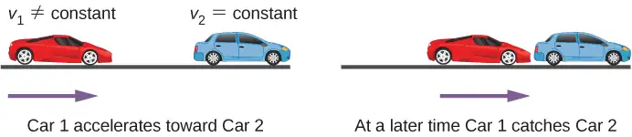
The time and distance required for car 1 to catch car 2 depends on the initial distance car 1 is from car 2 as well as the velocities of both cars and the acceleration of car 1. The kinematic equations describing the motion of both cars must be solved to find these unknowns.
Consider the following example.
Example 3.13 Cheetah Catching a Gazelle
A cheetah waits in hiding behind a bush. The cheetah spots a gazelle running past at 10 m/s. At the instant the gazelle passes the cheetah, the cheetah accelerates from rest at 4 m/s2 to catch the gazelle. (a) How long does it take the cheetah to catch the gazelle? (b) What is the displacement of the gazelle and cheetah?
Strategy
We use the set of equations for constant acceleration to solve this problem. Since there are two objects in motion, we have separate equations of motion describing each animal. But what links the equations is a common parameter that has the same value for each animal. If we look at the problem closely, it is clear the common parameter to each animal is their position x at a later time t. Since they both start at \(x_{0}=0\), their displacements are the same at a later time t, when the cheetah catches up with the gazelle. If we pick the equation of motion that solves for the displacement for each animal, we can then set the equations equal to each other and solve for the unknown, which is time.
Solution
a. Equation for the gazelle: The gazelle has a constant velocity, which is its average velocity, since it is not accelerating. Therefore, we use Equation 3.10 with \(x_{0}=0\):
Equation for the cheetah: The cheetah is accelerating from rest, so we use Equation 3.13 with \(x_{0}=0\) and \(v_{0}=0\):
Now we have an equation of motion for each animal with a common parameter, which can be eliminated to find the solution. In this case, we solve for t:
The gazelle has a constant velocity of 10 m/s, which is its average velocity. The acceleration of the cheetah is 4 m/s2. Evaluating t, the time for the cheetah to reach the gazelle, we have
b. To get the displacement, we use either the equation of motion for the cheetah or the gazelle, since they should both give the same answer.
Displacement of the cheetah:
Displacement of the gazelle:
We see that both displacements are equal, as expected.
Significance
It is important to analyze the motion of each object and to use the appropriate kinematic equations to describe the individual motion. It is also important to have a good visual perspective of the two-body pursuit problem to see the common parameter that links the motion of both objects.
Check Your Understanding
A bicycle has a constant velocity of 10 m/s. A person starts from rest and begins to run to catch up to the bicycle in 30 s when the bicycle is at the same position as the person. What is the acceleration of the person?
Answer
\(a=\frac{2}{3}{\:\text{m/s}}^{2}\).
3.5 Free Fall¶
Learning Objectives
By the end of this section, you will be able to:
- Use the kinematic equations with the variables y and g to analyze free-fall motion.
- Describe how the values of the position, velocity, and acceleration change during a free fall.
- Solve for the position, velocity, and acceleration as functions of time when an object is in a free fall.
An interesting application of Equation 3.4 through Equation 3.14 is called free fall, which describes the motion of an object falling in a gravitational field, such as near the surface of Earth or other celestial objects of planetary size. Let’s assume the body is falling in a straight line perpendicular to the surface, so its motion is one-dimensional. For example, we can estimate the depth of a vertical mine shaft by dropping a rock into it and listening for the rock to hit the bottom. But “falling,” in the context of free fall, does not necessarily imply the body is moving from a greater height to a lesser height. If a ball is thrown upward, the equations of free fall apply equally to its ascent as well as its descent.
Gravity¶
The most remarkable and unexpected fact about falling objects is that if air resistance and friction are negligible, then in a given location all objects fall toward the center of Earth with the same constant acceleration, independent of their mass. This experimentally determined fact is unexpected because we are so accustomed to the effects of air resistance and friction that we expect light objects to fall slower than heavy ones. Until Galileo Galilei (1564–1642) proved otherwise, people believed that a heavier object has a greater acceleration in a free fall. We now know this is not the case. In the absence of air resistance, heavy objects arrive at the ground at the same time as lighter objects when dropped from the same height Figure 3.26.
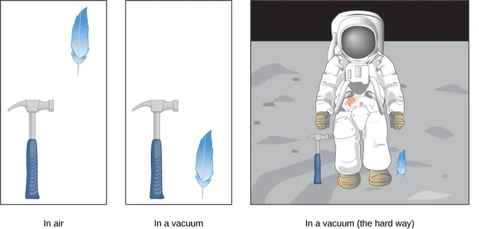
In the real world, air resistance can cause a lighter object to fall slower than a heavier object of the same size. A tennis ball reaches the ground after a baseball dropped at the same time. (It might be difficult to observe the difference if the height is not large.) Air resistance opposes the motion of an object through the air, and friction between objects—such as between clothes and a laundry chute or between a stone and a pool into which it is dropped—also opposes motion between them.
For the ideal situations of these first few chapters, an object falling without air resistance or friction is defined to be in free fall. The force of gravity causes objects to fall toward the center of Earth. The acceleration of free-falling objects is therefore called acceleration due to gravity. Acceleration due to gravity is constant, which means we can apply the kinematic equations to any falling object where air resistance and friction are negligible. This opens to us a broad class of interesting situations.
Acceleration due to gravity is so important that its magnitude is given its own symbol, g. It is constant at any given location on Earth and has the average value
Although g varies from 9.78 m/s2 to 9.83 m/s2, depending on latitude, altitude, underlying geological formations, and local topography, let’s use an average value of 9.8 m/s2 rounded to two significant figures in this text unless specified otherwise. Neglecting these effects on the value of g as a result of position on Earth’s surface, as well as effects resulting from Earth’s rotation, we take the direction of acceleration due to gravity to be downward (toward the center of Earth). In fact, its direction defines what we call vertical. Note that whether acceleration a in the kinematic equations has the value +g or −g depends on how we define our coordinate system. If we define the upward direction as positive, then \(a=-g=-9.8\:\text{m/s}^{2},\) and if we define the downward direction as positive, then \(a=g=9.8\:\text{m/s}^{2}\).
One-Dimensional Motion Involving Gravity¶
The best way to see the basic features of motion involving gravity is to start with the simplest situations and then progress toward more complex ones. So, we start by considering straight up-and-down motion with no air resistance or friction. These assumptions mean the velocity (if there is any) is vertical. If an object is dropped, we know the initial velocity is zero when in free fall. When the object has left contact with whatever held or threw it, the object is in free fall. When the object is thrown, it has the same initial speed in free fall as it did before it was released. When the object comes in contact with the ground or any other object, it is no longer in free fall and its acceleration of g is no longer valid. Under these circumstances, the motion is one-dimensional and has constant acceleration of magnitude g. We represent vertical displacement with the symbol y.
Kinematic Equations for Objects in Free Fall
We assume here that acceleration equals −g (with the positive direction upward).
Problem-Solving Strategy: Free Fall
- Decide on the sign of the acceleration of gravity. In Equation 3.15 through Equation 3.17, acceleration g is negative, which says the positive direction is upward and the negative direction is downward. In some problems, it may be useful to have acceleration g as positive, indicating the positive direction is downward.
- Draw a sketch of the problem. This helps visualize the physics involved.
- Record the knowns and unknowns from the problem description. This helps devise a strategy for selecting the appropriate equations to solve the problem.
- Decide which of Equation 3.15 through Equation 3.17 are to be used to solve for the unknowns.
Example 3.14 Free Fall of a Ball
Figure 3.27 shows the positions of a ball, at 1-s intervals, with an initial velocity of 4.9 m/s downward, that is thrown from the top of a 98-m-high building. (a) How much time elapses before the ball reaches the ground? (b) What is the velocity when it arrives at the ground?
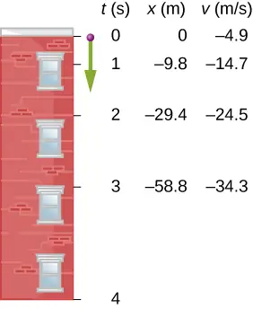
Strategy
Choose the origin at the top of the building with the positive direction upward and the negative direction downward. To find the time when the position is −98 m, we use Equation 3.16, with \(y_{0}=0,v_{0}=-4.9\:\text{m/s,}\:\text{and}\:g=9.8\:\text{m/s}^{2}\).
Solution
a. Substitute the given values into the equation:
This simplifies to
This is a quadratic equation with roots \(t=-5.0\:\mathrm{s}\:\text{and}\:t=4.0\:\mathrm{s}\). The positive root is the one we are interested in, since time \(t=0\) is the time when the ball is released at the top of the building. (The time \(t=-5.0\:\mathrm{s}\) represents the fact that a ball thrown upward from the ground would have been in the air for 5.0 s when it passed by the top of the building moving downward at 4.9 m/s.)
b. Using Equation 3.15, we have
Significance
For situations when two roots are obtained from a quadratic equation in the time variable, we must look at the physical significance of both roots to determine which is correct. Since \(t=0\) corresponds to the time when the ball was released, the negative root would correspond to a time before the ball was released, which is not physically meaningful. When the ball hits the ground, its velocity is not immediately zero, but as soon as the ball interacts with the ground, its acceleration is not g and it accelerates with a different value over a short time to zero velocity. This problem shows how important it is to establish the correct coordinate system and to keep the signs of g in the kinematic equations consistent.
Example 3.15 Vertical Motion of a Baseball
A batter hits a baseball straight upward at home plate and the ball is caught 5.0 s after it is struck (Figure 3.28). (a) What is the initial velocity of the ball? (b) What is the maximum height the ball reaches? (c) How long does it take to reach the maximum height? (d) What is the acceleration at the top of its path? (e) What is the velocity of the ball when it is caught? Assume the ball is hit and caught at the same location.
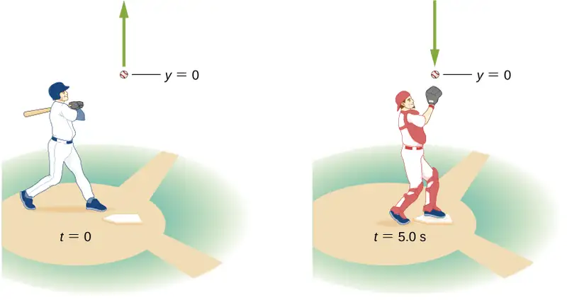
Strategy
Choose a coordinate system with a positive y-axis that is straight up and with an origin that is at the spot where the ball is hit and caught.
Solution
a. Equation 3.16 gives
which gives \(v_{0}=24.5\:\text{m/s}\).
b. At the maximum height, \(v=0\). With \(v_{0}=24.5\:\text{m/s}\), Equation 3.17 gives
or
c. To find the time when \(v=0\), we use Equation 3.15:
This gives \(t=2.5\:\text{s}\). Since the ball rises for 2.5 s, the time to fall is 2.5 s.
d. The acceleration is 9.8 m/s2 everywhere, even when the velocity is zero at the top of the path. Although the velocity is zero at the top, it is changing at the rate of 9.8 m/s2 downward.
e. The velocity at \(t=5.0\mathrm{s}\) can be determined with Equation 3.15:
Significance
The ball returns with the speed it had when it left. This is a general property of free fall for any initial velocity. We used a single equation to go from throw to catch, and did not have to break the motion into two segments, upward and downward. We are used to thinking that the effect of gravity is to create free fall downward toward Earth. It is important to understand, as illustrated in this example, that objects moving upward away from Earth are also in a state of free fall.
Check Your Understanding
A chunk of ice breaks off a glacier and falls 30.0 m before it hits the water. Assuming it falls freely (there is no air resistance), how long does it take to hit the water? Which quantity increases faster, the speed of the ice chunk or its distance traveled?
Answer
It takes 2.47 s to hit the water. The quantity distance traveled increases faster.
Example 3.16 Rocket Booster
A small rocket with a booster blasts off and heads straight upward. When at a height of \(5.0\:\text{km}\) and velocity of 200.0 m/s, it releases its booster. (a) What is the maximum height the booster attains? (b) What is the velocity of the booster at a height of 6.0 km? Neglect air resistance.
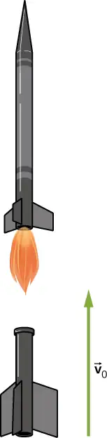
Strategy
We need to select the coordinate system for the acceleration of gravity, which we take as negative downward. We are given the initial velocity of the booster and its height. We consider the point of release as the origin. We know the velocity is zero at the maximum position within the acceleration interval; thus, the velocity of the booster is zero at its maximum height, so we can use this information as well. From these observations, we use Equation 3.17, which gives us the maximum height of the booster. We also use Equation 3.17 to give the velocity at 6.0 km. The initial velocity of the booster is 200.0 m/s.
Solution
a. From Equation 3.17, \(v^{2}=v_{0}^{2}-2g(y-y_{0})\). With \(v=0\:\text{and}\:y_{0}=0\), we can solve for y:
This solution gives the maximum height of the booster in our coordinate system, which has its origin at the point of release, so the maximum height of the booster is roughly 7.0 km.
b. An altitude of 6.0 km corresponds to\(y=1.0\:\times\:{10}^{3}\:\text{m}\) in the coordinate system we are using. The other initial conditions are\(y_{0}=0,\:\text{and}\:v_{0}=200.0\:\text{m/s}\).
We have, from Equation 3.17,
Significance
We have both a positive and negative solution in (b). Since our coordinate system has the positive direction upward, the +142.8 m/s corresponds to a positive upward velocity at 6000 m during the upward leg of the trajectory of the booster. The value v = −142.8 m/s corresponds to the velocity at 6000 m on the downward leg. This example is also important in that an object is given an initial velocity at the origin of our coordinate system, but the origin is at an altitude above the surface of Earth, which must be taken into account when forming the solution.
Media
Engage the Phet simulation below to learn about graphing polynomials. The shape of the curve changes as the constants are adjusted. View the curves for the individual terms (for example, y = bx) to see how they add to generate the polynomial curve.
3.6 Finding Velocity and Displacement from Acceleration¶
Learning Objectives
By the end of this section, you will be able to:
- Derive the kinematic equations for constant acceleration using integral calculus.
- Use the integral formulation of the kinematic equations in analyzing motion.
- Find the functional form of velocity versus time given the acceleration function.
- Find the functional form of position versus time given the velocity function.
This section assumes you have enough background in calculus to be familiar with integration. In Instantaneous Velocity and Speed and Average and Instantaneous Acceleration we introduced the kinematic functions of velocity and acceleration using the derivative. By taking the derivative of the position function we found the velocity function, and likewise by taking the derivative of the velocity function we found the acceleration function. Using integral calculus, we can work backward and calculate the velocity function from the acceleration function, and the position function from the velocity function.
Kinematic Equations from Integral Calculus¶
Let’s begin with a particle with an acceleration a(t) which is a known function of time. Since the time derivative of the velocity function is acceleration,
we can take the indefinite integral of both sides, finding
where C1 is a constant of integration. Since \(\displaystyle \int\frac{d}{dt}v(t)dt=v(t)\), the velocity is given by
equation callout
Similarly, the time derivative of the position function is the velocity function,
Thus, we can use the same mathematical manipulations we just used and find
equation callout
where C2 is a second constant of integration.
We can derive the kinematic equations for a constant acceleration using these integrals. With a(t) = a a constant, and doing the integration in Equation 3.18, we find
If the initial velocity is v(0) = v0, then
Then, C1 = v0 and
which is Equation 3.12. Substituting this expression into Equation 3.19 gives
Doing the integration, we find
If x(0) = x0, we have
so, C2 = x0. Substituting back into the equation for x(t), we finally have
which is Equation 3.13.
Example 3.17 Motion of a Motorboat
A motorboat is traveling at a constant velocity of 5.0 m/s when it starts to accelerate opposite to the motion to arrive at the dock. Its acceleration is \(a(t)=-\frac{1}{4}t\:\text{m/}\text{s}^{3}\). (a) What is the velocity function of the motorboat? (b) At what time does the velocity reach zero? (c) What is the position function of the motorboat? (d) What is the displacement of the motorboat from the time it begins to accelerate opposite to the motion to when the velocity is zero? (e) Graph the velocity and position functions.
Strategy
(a) To get the velocity function we must integrate and use initial conditions to find the constant of integration. (b) We set the velocity function equal to zero and solve for t. (c) Similarly, we must integrate to find the position function and use initial conditions to find the constant of integration. (d) Since the initial position is taken to be zero, we only have to evaluate the position function at the time when the velocity is zero.
Solution
We take t = 0 to be the time when the boat starts to accelerate opposite to the motion.
a. From the functional form of the acceleration we can solve Equation 3.18 to get v(t):
At t = 0 we have v(0) = 5.0 m/s = 0 + C1, so C1 = 5.0 m/s or \(v(t)=5.0\:\text{m/}\text{s}-\frac{1}{8}\:\text{m/}\text{s}^{3}\:t^{2}\).
b. \(v(t)=0=5.0\:\text{m/}\text{s}-\frac{1}{8}t^{2}\text{m/}\text{s}^{3}\Rightarrow t=6.3\:\text{s}\)
c. Solve Equation 3.19:
At t = 0, we set x(0) = 0 = x0, since we are only interested in the displacement from when the boat starts to accelerate opposite to the motion. We have
Therefore, the equation for the position is
d. Since the initial position is taken to be zero, we only have to evaluate the position function at the time when the velocity is zero. This occurs at t = 6.3 s. Therefore, the displacement is
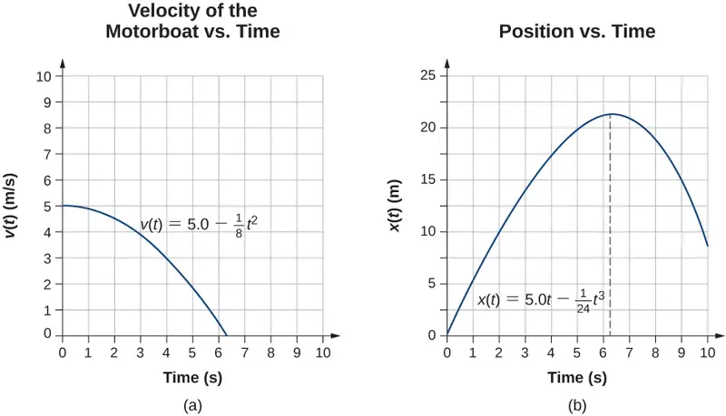
Significance
The acceleration function is linear in time so the integration involves simple polynomials. In Figure 3.30, we see that if we extend the solution beyond the point when the velocity is zero, the velocity becomes negative and the boat reverses direction. This tells us that solutions can give us information outside our immediate interest and we should be careful when interpreting them.
Check Your Understanding
A particle starts from rest and has an acceleration function \(a(t)=\left( 5-\left( 10\frac{1}{s} \right)t \right)\frac{m}{s^{2}}\). (a) What is the velocity function? (b) What is the position function? (c) When is the velocity zero?
Answer
- The velocity function is the integral of the acceleration function plus a constant of integration. By Equation 3.18,
\(v(t)=\displaystyle \int a(t)dt+C_{1}=\displaystyle \int(5-10t)dt+C_{1}=5t-5t^{2}+C_{1}.\)
Since v(0) = 0, we have C1 = 0; so,
\(v(t)=5t-5t^{2}.\) - By Equation 3.19,
\(x(t)=\displaystyle \int v(t)dt+C_{2}=\displaystyle \int(5t-5t^{2})dt+C_{2}=\frac{5}{2}t^{2}-\frac{5}{3}t^{3}+C_{2}\).
Since x(0) = 0, we have C2 = 0, and
\(x(t)=\frac{5}{2}t^{2}-\frac{5}{3}t^{3}.\) - The velocity can be written as v(t) = 5t(1 – t), which equals zero at t = 0, and t = 1 s.
Chapter Review¶
Key Terms¶
- acceleration due to gravity
- acceleration of an object as a result of gravity
- average acceleration
- the rate of change in velocity; the change in velocity over time
- average speed
- the total distance traveled divided by elapsed time
- average velocity
- the displacement divided by the time over which displacement occurs under constant acceleration
- displacement
- the change in position of an object
- distance traveled
- the total length of the path traveled between two positions
- elapsed time
- the difference between the ending time and the beginning time
- free fall
- the state of movement that results from gravitational force only
- instantaneous acceleration
- acceleration at a specific point in time
- instantaneous speed
- the absolute value of the instantaneous velocity
- instantaneous velocity
- the velocity at a specific instant or time point
- kinematics
- the description of motion through properties such as position, time, velocity, and acceleration
- position
- the location of an object at a particular time
- total displacement
- the sum of individual displacements over a given time period
- two-body pursuit problem
- a kinematics problem in which the unknowns are calculated by solving the kinematic equations simultaneously for two moving objects
Key Equations¶
| Displacement | \(\Delta x=x_{\text{f}}-x_{\text{i}}\) |
| Total displacement | \(\Delta x_{\text{Total}}=\displaystyle \sum\Delta x_{\text{i}}\) |
| Average velocity | \(\bar{v}=\frac{\Delta x}{\Delta t}=\frac{x_{2}-x_{1}}{t_{2}-t_{1}}\) |
| Instantaneous velocity | \(v(t)=\frac{dx(t)}{dt}\) |
| Average speed | \(\text{Average speed}=\bar{s}=\frac{\text{Total distance}}{\text{Elapsed time}}\) |
| Instantaneous speed | \(\text{Instantaneous speed}=|v(t)|\) |
| Average acceleration | \(\bar{a}=\frac{\Delta v}{\Delta t}=\frac{v_{f}-v_{0}}{t_{f}-t_{0}}\) |
| Instantaneous acceleration | \(a(t)=\frac{dv(t)}{dt}\) |
| Position from average velocity | \(x=x_{0}+\bar{v}t\) |
| Average velocity (for constant acceleration) | \(\bar{v}=\frac{v_{0}+v}{2}\) |
| Velocity from acceleration | \(v=v_{0}+at\;(\text{constant}\:a\text{)}\) |
| Position from velocity and acceleration | \(x=x_{0}+v_{0}t+\frac{1}{2}at^{2}\;(\text{constant}\:a\text{)}\) |
| Velocity from distance | \(v^{2}=v_{0}^{2}+2a(x-x_{0})\;(\text{constant}\:a\text{)}\) |
| Velocity of free fall | \(v=v_{0}-gt\:\text{(positive upward)}\) |
| Height of free fall | \(y=y_{0}+v_{0}t-\frac{1}{2}gt^{2}\) |
| Velocity of free fall from height | \(v^{2}=v_{0}^{2}-2g(y-y_{0})\) |
| Velocity from acceleration | \(v(t)=\displaystyle \int a(t)dt+C_{1}\) |
| Position from velocity | \(x(t)=\displaystyle \int v(t)dt+C_{2}\) |
Summary¶
3.1 Position, Displacement, and Average Velocity¶
-
Kinematics is the description of motion without considering its causes. In this chapter, it is limited to motion along a straight line, called one-dimensional motion.
-
Displacement is the change in position of an object. The SI unit for displacement is the meter. Displacement has direction as well as magnitude.
-
Distance traveled is the total length of the path traveled between two positions.
-
Time is measured in terms of change. The time between two position points \(x_{1}\) and \(x_{2}\) is \(\Delta t=t_{2}-t_{1}\). Elapsed time for an event is \(\Delta t=t_{\text{f}}-t_{0}\), where \(t_{\text{f}}\) is the final time and \(t_{0}\) is the initial time. The initial time is often taken to be zero.
-
Average velocity \(\bar{v}\) is defined as displacement divided by elapsed time. If \(x_{1},t_{1}\) and \(x_{2},t_{2}\) are two position time points, the average velocity between these points is
\[ \bar{v}=\frac{\Delta x}{\Delta t}=\frac{x_{2}-x_{1}}{t_{2}-t_{1}}. \]
3.2 Instantaneous Velocity and Speed¶
- Instantaneous velocity is a continuous function of time and gives the velocity at any point in time during a particle’s motion. We can calculate the instantaneous velocity at a specific time by taking the derivative of the position function, which gives us the functional form of instantaneous velocity v(t).
- Instantaneous velocity is a vector and can be negative.
- Instantaneous speed is found by taking the absolute value of instantaneous velocity, and it is always positive.
- Average speed is total distance traveled divided by elapsed time.
- The slope of a position-versus-time graph at a specific time gives instantaneous velocity at that time.
3.3 Average and Instantaneous Acceleration¶
- Acceleration is the rate at which velocity changes. The SI unit for acceleration is meters per second squared.
- Acceleration is a vector. It has both magnitude and direction and so can be the rate of change of the magnitude or direction of the velocity, or both.
- Instantaneous acceleration a(t) is a continuous function of time and gives the acceleration at any specific time during the motion. It is calculated from the derivative of the velocity function. Instantaneous acceleration is the slope of the velocity-versus-time graph.
- Negative acceleration (sometimes called deceleration) is acceleration in the negative direction in the chosen coordinate system.
3.4 Motion with Constant Acceleration¶
- When analyzing one-dimensional motion with constant acceleration, identify the known quantities and choose the appropriate equations to solve for the unknowns. Either one or two of the kinematic equations are needed to solve for the unknowns, depending on the known and unknown quantities.
- Two-body pursuit problems always require two equations to be solved simultaneously for the unknowns.
3.5 Free Fall¶
- An object in free fall experiences constant acceleration if air resistance is negligible.
- On Earth, all free-falling objects have an acceleration g due to gravity, which averages \(g=9.81\:\text{m/s}^{2}\).
- For objects in free fall, the upward direction is normally taken as positive for displacement, velocity, and acceleration.
3.6 Finding Velocity and Displacement from Acceleration¶
- Integral calculus gives us a more complete formulation of kinematics.
- If acceleration a(t) is known, we can use integral calculus to derive expressions for velocity v(t) and position x(t).
- If acceleration is constant, the integral equations reduce to Equation 3.12 and Equation 3.13 for motion with constant acceleration.
Conceptual Questions¶
3.1 Position, Displacement, and Average Velocity¶
1. Give an example in which there are clear distinctions among distance traveled, displacement, and magnitude of displacement. Identify each quantity in your example specifically.
Answer
You drive your car into town and return to drive past your house to a friend’s house.
2. Under what circumstances does distance traveled equal magnitude of displacement? What is the only case in which magnitude of displacement and distance are exactly the same?
3. Bacteria move back and forth using their flagella (structures that look like little tails). Speeds of up to 50 μm/s (50 × 10−6 m/s) have been observed. The total distance traveled by a bacterium is large for its size, whereas its displacement is small. Why is this?
Answer
If the bacteria are moving back and forth, then the displacements are canceling each other and the final displacement is small.
4. Give an example of a device used to measure time and identify what change in that device indicates a change in time.
5. Does a car’s odometer measure distance traveled or displacement?
Answer
Distance traveled
6. During a given time interval the average velocity of an object is zero. What can you conclude about its displacement over the time interval?
3.2 Instantaneous Velocity and Speed¶
7. There is a distinction between average speed and the magnitude of average velocity. Give an example that illustrates the difference between these two quantities.
Answer
Average speed is the total distance traveled divided by the elapsed time. If you go for a walk, leaving and returning to your home, your average speed is a positive number. Since Average velocity = Displacement/Elapsed time, your average velocity is zero.
8. Does the speedometer of a car measure speed or velocity?
9. If you divide the total distance traveled on a car trip (as determined by the odometer) by the elapsed time of the trip, are you calculating average speed or magnitude of average velocity? Under what circumstances are these two quantities the same?
Answer
Average speed. They are the same if the car doesn’t reverse direction.
10. How are instantaneous velocity and instantaneous speed related to one another? How do they differ?
3.3 Average and Instantaneous Acceleration¶
11. Is it possible for speed to be constant while acceleration is not zero?
Answer
No, in one dimension constant speed requires zero acceleration.
12. Is it possible for velocity to be constant while acceleration is not zero? Explain.
13. Give an example in which velocity is zero yet acceleration is not.
Answer
A ball is thrown into the air and its velocity is zero at the apex of the throw, but acceleration is not zero.
14. If a subway train is moving to the left (has a negative velocity) and then comes to a stop, what is the direction of its acceleration? Is the acceleration positive or negative?
15. Plus and minus signs are used in one-dimensional motion to indicate direction. What is the sign of an acceleration that reduces the magnitude of a negative velocity? Of a positive velocity?
Answer
Plus, minus
3.4 Motion with Constant Acceleration¶
16. When analyzing the motion of a single object, what is the required number of known physical variables that are needed to solve for the unknown quantities using the kinematic equations?
17. State two scenarios of the kinematics of single object where three known quantities require two kinematic equations to solve for the unknowns.
Answer
If the acceleration, time, and displacement are the knowns, and the initial and final velocities are the unknowns, then two kinematic equations must be solved simultaneously. Also if the final velocity, time, and displacement are the knowns then two kinematic equations must be solved for the initial velocity and acceleration.
3.5 Free Fall¶
18. What is the acceleration of a rock thrown straight upward on the way up? At the top of its flight? On the way down? Assume there is no air resistance.
19. An object that is thrown straight up falls back to Earth. This is one-dimensional motion. (a) When is its velocity zero? (b) Does its velocity change direction? (c) Does the acceleration have the same sign on the way up as on the way down?
Answer
a. at the top of its trajectory; b. yes, at the top of its trajectory; c. yes
20. Suppose you throw a rock nearly straight up at a coconut in a palm tree and the rock just misses the coconut on the way up but hits the coconut on the way down. Neglecting air resistance and the slight horizontal variation in motion to account for the hit and miss of the coconut, how does the speed of the rock when it hits the coconut on the way down compare with what it would have been if it had hit the coconut on the way up? Is it more likely to dislodge the coconut on the way up or down? Explain.
21. The severity of a fall depends on your speed when you strike the ground. All factors but the acceleration from gravity being the same, how many times higher could a safe fall occur on the Moon than on Earth (gravitational acceleration on the Moon is about one-sixth that of the Earth)?
Answer
Earth \(v=v_{0}-gt=-gt\); Moon \(v'=\:-\frac{g}{6}t'\;v=v'\;-gt=-\frac{g}{6}t'\;t'=6t\); Earth \(y=-\frac{1}{2}gt^{2}\) Moon \(y'=-\frac{1}{2}\:\frac{g}{6}{(6t)}^{2}=-\frac{1}{2}g6t^{2}=-6\left( \frac{1}{2}gt^{2} \right)=-6y\)
22. How many times higher could an astronaut jump on the Moon than on Earth if her takeoff speed is the same in both locations (gravitational acceleration on the Moon is about on-sixth of that on Earth)?
3.6 Finding Velocity and Displacement from Acceleration¶
23. When given the acceleration function, what additional information is needed to find the velocity function and position function?
Problems¶
3.1 Position, Displacement, and Average Velocity¶
24. Consider a coordinate system in which the positive x axis is directed upward vertically. What are the positions of a particle (a) 5.0 m directly above the origin and (b) 2.0 m below the origin?
25. A car is 2.0 km west of a traffic light at t = 0 and 5.0 km east of the light at t = 6.0 min. Assume the origin of the coordinate system is the light and the positive x direction is eastward. (a) What are the car’s position vectors at these two times? (b) What is the car’s displacement between 0 min and 6.0 min?
Answer
a. \({\mathbf{\vec{x}}}_{1}=(-2.0\:\text{km})\mathbf{\hat{i}}\), \({\mathbf{\vec{x}}}_{2}=(5.0\:\text{km})\mathbf{\hat{i}}\); b. 7.0 km east
26. The Shanghai maglev train connects Longyang Road to Pudong International Airport, a distance of 30 km. The journey takes 8 minutes on average. What is the maglev train’s average velocity?
27. The position of a particle moving along the x-axis is given by \(x(t)=4.0-2.0t\) m. (a) At what time does the particle cross the origin? (b) What is the displacement of the particle between \(\text{t}=3.0\:\text{s}\) and \(\text{t}=6.0\:\text{s}?\)
Answer
a. \(t=2.0\) s; b. \(x(6.0)-x(3.0)=-8.0-(-2.0)=-6.0\:\text{m}\)
28. A cyclist rides 8.0 km east for 20 minutes, then they turn and head west for 8 minutes and 3.2 km. Finally, they ride east for 16 km, which takes 40 minutes. (a) What is the final displacement of the cyclist? (b) What is their average velocity?
29. On February 15, 2013, a superbolide meteor (brighter than the Sun) entered Earth’s atmosphere over Chelyabinsk, Russia, and exploded at an altitude of 23.5 km. Eyewitnesses could feel the intense heat from the fireball, and the blast wave from the explosion blew out windows in buildings. The blast wave took approximately 2 minutes 30 seconds to reach ground level. The blast wave traveled at 10° above the horizon. (a) What was the average velocity of the blast wave? b) Compare this with the speed of sound, which is 343 m/s at sea level.
Answer
a. 150.0 s, \(\bar{v}=902\:\text{m/s}\); b. 263% the speed of sound at sea level or about Mach 2.
3.2 Instantaneous Velocity and Speed¶
30. A woodchuck runs 20 m to the right in 5 s, then turns and runs 10 m to the left in 3 s. (a) What is the average velocity of the woodchuck? (b) What is its average speed?
31. Sketch the velocity-versus-time graph from the following position-versus-time graph.
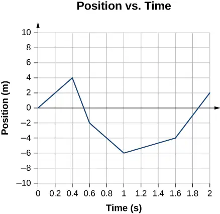
Answer
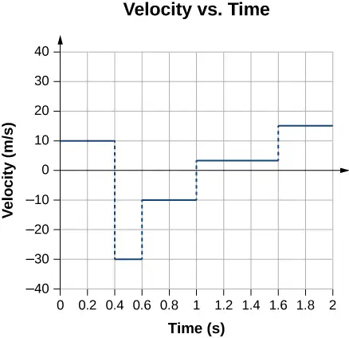
32. Sketch the velocity-versus-time graph from the following position-versus-time graph.
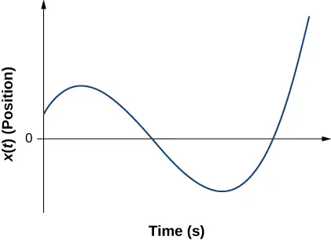
33. Given the following velocity-versus-time graph, sketch the position-versus-time graph.
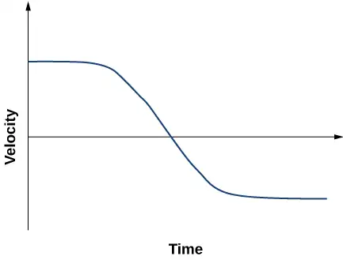
Answer
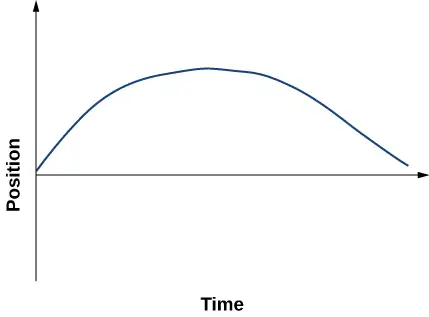
34. An object has a position function x(t) = 5t m. (a) What is the velocity as a function of time? (b) Graph the position function and the velocity function.
35. A particle moves along the x-axis according to \(x(t)=10t-2t^{2}\:\text{m}\). (a) What is the instantaneous velocity at t = 2 s and t = 3 s? (b) What is the instantaneous speed at these times? (c) What is the average velocity between t = 2 s and t = 3 s?
Answer
a. \(v(t)=(10-4t)\text{m/s}\); v(2 s) = 2 m/s, v(3 s) = −2 m/s; b. \(|v(2\:\text{s})|=2\:\text{m/s},|v(3\:\text{s})|=2\:\text{m/s}\); (c) \(\bar{v}=0\:\text{m/s}\)
36. Unreasonable results. A particle moves along the x-axis according to \(x(t)=3t^{3}+5t\). At what time is the velocity of the particle equal to zero? Is this reasonable?
3.3 Average and Instantaneous Acceleration¶
37. A cheetah can accelerate from rest to a speed of 30.0 m/s in 7.00 s. What is its acceleration?
Answer
\(a=4.29\text{m/s}^{2}\)
38. Dr. John Paul Stapp was a U.S. Air Force officer who studied the effects of extreme acceleration on the human body. On December 10, 1954, Stapp rode a rocket sled, accelerating from rest to a top speed of 282 m/s (1015 km/h) in 5.00 s and was brought jarringly back to rest in only 1.40 s. Calculate his (a) acceleration in his direction of motion and (b) acceleration opposite to his direction of motion. Express each in multiples of g (9.80 m/s2) by taking its ratio to the acceleration of gravity.
39. Sketch the acceleration-versus-time graph from the following velocity-versus-time graph.
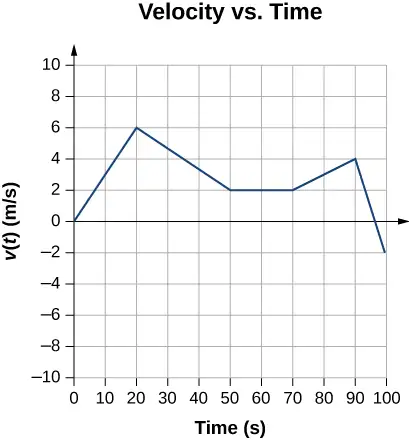
Answer
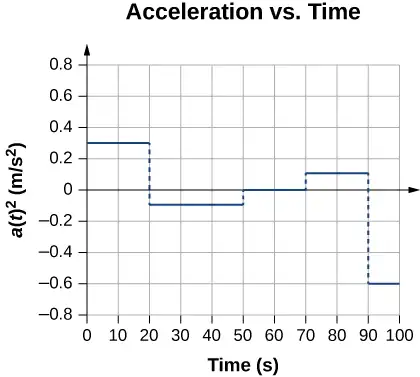
40. A commuter backs her car out of her garage with an acceleration of 1.40 m/s2. (a) How long does it take her to reach a speed of 2.00 m/s? (b) If she then brakes to a stop in 0.800 s, what is her acceleration?
41. Assume an intercontinental ballistic missile goes from rest to a suborbital speed of 6.50 km/s in 60.0 s (the actual speed and time are classified). What is its average acceleration in meters per second squared and in multiples of g (9.80 m/s2)?
Answer
\(a=11.1g\)
42. An airplane, starting from rest, moves down the runway at constant acceleration for 18 s and then takes off at a speed of 60 m/s. What is the average acceleration of the plane?
3.4 Motion with Constant Acceleration¶
43. A particle moves in a straight line at a constant velocity of 30 m/s. What is its displacement between t = 0 and t = 5.0 s?
Answer
150 m
44. A particle moves in a straight line with an initial velocity of 0 m/s and a constant acceleration of 30 m/s2. If \(x=0att=0\), what is the particle’s position at t = 5 s?
45. A particle moves in a straight line with an initial velocity of 30 m/s and constant acceleration 30 m/s2. (a) What is its displacement at t = 5 s? (b) What is its velocity at this same time?
Answer
a. 525 m;
b. \(v=180\:\text{m/s}\)
46. (a) Sketch a graph of velocity versus time corresponding to the graph of displacement versus time given in the following figure. (b) Identify the time or times (ta, tb, tc, etc.) at which the instantaneous velocity has the greatest positive value. (c) At which times is it zero? (d) At which times is it negative?
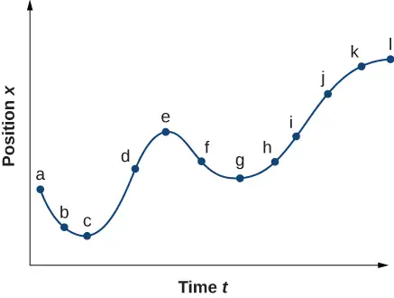
47. (a) Sketch a graph of acceleration versus time corresponding to the graph of velocity versus time given in the following figure. (b) Identify the time or times (ta, tb, tc, etc.) at which the acceleration has the greatest positive value. (c) At which times is it zero? (d) At which times is it negative?
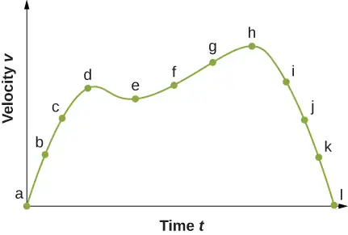
Answer
a.
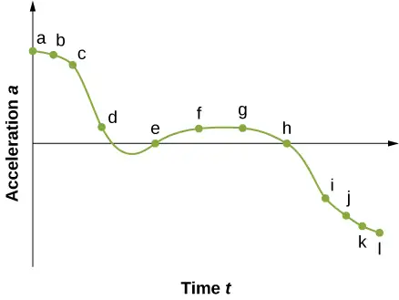
b. The acceleration has the greatest positive value at \(t_{a}\)
c. The acceleration is zero at \(t_{e}\:\text{and}\:t_{h}\)
d. The acceleration is negative at \(t_{i}{,}t_{j}{,}t_{k}{,}t_{l}\)
48. A particle has a constant acceleration of 6.0 m/s2. (a) If its initial velocity is 2.0 m/s, at what time is its displacement 5.0 m? (b) What is its velocity at that time?
49. At t = 10 s, a particle is moving from left to right with a speed of 5.0 m/s. At t = 20 s, the particle is moving right to left with a speed of 8.0 m/s. Assuming the particle’s acceleration is constant, determine (a) its acceleration, (b) its initial velocity, and (c) the instant when its velocity is zero.
Answer
a. \(a=-1.3{\:\text{m/s}}^{2}\);
b. \(v_{0}=18\:\text{m/s}\);
c. \(t=13.8\:\text{s}\)
50. A well-thrown ball is caught in a well-padded mitt. If the acceleration of the ball is\(2.10\:\times\:{10}^{4}{\:\text{m/s}}^{2}\), and 1.85 ms \((1\:\text{ms}={10}^{-3}\:\text{s})\) elapses from the time the ball first touches the mitt until it stops, what is the initial velocity of the ball?
51. A bullet in a gun is accelerated from the firing chamber to the end of the barrel at an average rate of \(6.20\:\times\:{10}^{5}{\:\text{m/s}}^{2}\) for \(8.10\:\times\:{10}^{-4}\:\text{s}\). What is its muzzle velocity (that is, its final velocity)?
Answer
\(v=502.20\:\text{m/s}\)
52. (a) A light-rail commuter train accelerates at a rate of 1.35 m/s2. How long does it take to reach its top speed of 80.0 km/h, starting from rest? (b) The same train ordinarily accelerates opposite to the motion at a rate of 1.65 m/s2. How long does it take to come to a stop from its top speed? (c) In emergencies, the train can accelerate opposite to the motion more rapidly, coming to rest from 80.0 km/h in 8.30 s. What is its emergency acceleration in meters per second squared?
53. While entering a freeway, a car accelerates from rest at a rate of 2.40 m/s2 for 12.0 s. (a) Draw a sketch of the situation. (b) List the knowns in this problem. (c) How far does the car travel in those 12.0 s? To solve this part, first identify the unknown, then indicate how you chose the appropriate equation to solve for it. After choosing the equation, show your steps in solving for the unknown, check your units, and discuss whether the answer is reasonable. (d) What is the car’s final velocity? Solve for this unknown in the same manner as in (c), showing all steps explicitly.
Answer
a.
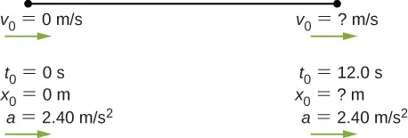
b. Knowns: \(a=2.40\:\text{m/s}^{2},t=12.0\:\text{s,}\:v_{0}=0\:\text{m/s}\), and \(x_{0}=0\:\text{m}\);
c. \(x=x_{0}+v_{0}t+\frac{1}{2}at^{2}=\frac{1}{2}at^{2}=2.40\:\text{m/}\text{s}^{2}{(12.0\:\text{s})}^{2}=172.80\:\text{m}\), the answer seems reasonable at about 172.8 m; d. \(v=28.8\:\text{m/s}\)
54. Unreasonable results At the end of a race, a runner accelerates opposite to the motion from a velocity of 9.00 m/s at a rate of 2.00 m/s2. (a) How far does she travel in the next 5.00 s? (b) What is her final velocity? (c) Evaluate the result. Does it make sense?
55. Blood is accelerated from rest to 30.0 cm/s in a distance of 1.80 cm by the left ventricle of the heart. (a) Make a sketch of the situation. (b) List the knowns in this problem. (c) How long does the acceleration take? To solve this part, first identify the unknown, then discuss how you chose the appropriate equation to solve for it. After choosing the equation, show your steps in solving for the unknown, checking your units. (d) Is the answer reasonable when compared with the time for a heartbeat?
Answer
a.
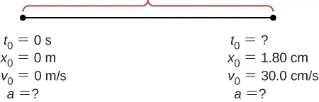
b. Knowns: \(v=30.0\:\text{cm}\text{/}\text{s,}\:x=1.80\:\text{cm}\);
c. \(a=250\:\text{cm/}\text{s}^{2},\;t=0.12\:\text{s}\);
d. yes
56. During a slap shot, a hockey player accelerates the puck from a velocity of 8.00 m/s to 40.0 m/s in the same direction. If this shot takes \(3.33\:\times\:{10}^{-2}\:\text{s}\), what is the distance over which the puck accelerates?
57. A powerful motorcycle can accelerate from rest to 26.8 m/s (100 km/h) in only 3.90 s. (a) What is its average acceleration? (b) Assuming constant acceleration, how far does it travel in that time?
Answer
a. 6.87 m/s2; b. \(x=52.26\:\text{m}\)
58. Freight trains can produce only relatively small accelerations. (a) What is the final velocity of a freight train that accelerates at a rate of \(0.0500\:\text{m/s}^{2}\) for 8.00 min, starting with an initial velocity of 4.00 m/s? (b) If the train can slow down at a rate of \(0.550\:\text{m/s}^{2}\), how long will it take to come to a stop from this velocity? (c) How far will it travel in each case?
59. A fireworks shell is accelerated from rest to a velocity of 65.0 m/s over a distance of 0.250 m. (a) Calculate the acceleration. (b) How long did the acceleration last?
Answer
a. \(a=8450\:\text{m/}\text{s}^{2}\);
b. \(t=0.0077\:\text{s}\)
60. A swan on a lake gets airborne by flapping its wings and running on top of the water. (a) If the swan must reach a velocity of 6.00 m/s to take off and it accelerates from rest at an average rate of \(0.35\:\text{m/s}^{2}\), how far will it travel before becoming airborne? (b) How long does this take?
61. A woodpecker’s brain is specially protected from large accelerations by tendon-like attachments inside the skull. While pecking on a tree, the woodpecker’s head comes to a stop from an initial velocity of 0.600 m/s in a distance of only 2.00 mm. (a) Find the acceleration in meters per second squared and in multiples of g, where g = 9.80 m/s2. (b) Calculate the stopping time. (c) The tendons cradling the brain stretch, making its stopping distance 4.50 mm (greater than the head and, hence, less acceleration of the brain). What is the brain’s acceleration, expressed in multiples of g?
Answer
a. \(a=9.18\:g;\)
b. \(t=6.67\:\times\:{10}^{-3}\:\text{s}\);
c. \(\begin{array}{c} a=-40.0\:\text{m/s}^{2} \\ a=4.08\:g \end{array}\)
62. An unwary football player collides with a padded goalpost while running at a velocity of 7.50 m/s and comes to a full stop after compressing the padding and his body 0.350 m. (a) What is his acceleration? (b) How long does the collision last?
63. A care package is dropped out of a cargo plane and lands in the forest. If we assume the care package speed on impact is 54 m/s (123 mph), then what is its acceleration? Assume the trees and snow stops it over a distance of 3.0 m.
Answer
Knowns: \(x=3\:\text{m,}\:v=0\:\text{m/s,}\;v_{0}=54\:\text{m/s}\). We want a, so we can use this equation: \(a=-486\:\text{m/s}^{2}\).
64. An express train passes through a station. It enters with an initial velocity of 22.0 m/s and accelerates opposite to the motion at a rate of \(0.150\:\text{m/s}^{2}\) as it goes through. The station is 210.0 m long. (a) How fast is it going when the nose leaves the station? (b) How long is the nose of the train in the station? (c) If the train is 130 m long, what is the velocity of the end of the train as it leaves? (d) When does the end of the train leave the station?
65. Unreasonable results Dragsters can actually reach a top speed of 145.0 m/s in only 4.45 s. (a) Calculate the average acceleration for such a dragster. (b) Find the final velocity of this dragster starting from rest and accelerating at the rate found in (a) for 402.0 m (a quarter mile) without using any information on time. (c) Why is the final velocity greater than that used to find the average acceleration? (Hint: Consider whether the assumption of constant acceleration is valid for a dragster. If not, discuss whether the acceleration would be greater at the beginning or end of the run and what effect that would have on the final velocity.)
Answer
a. \(a=32.58\:\text{m/}\text{s}^{2}\);
b. \(v=161.85\:\text{m/s}\);
c. \(v \gt v_{\max}\), because the assumption of constant acceleration is not valid for a dragster. A dragster changes gears and would have a greater acceleration in first gear than second gear than third gear, and so on. The acceleration would be greatest at the beginning, so it would not be accelerating at \(32.6{\:\text{m/s}}^{2}\) during the last few meters, but substantially less, and the final velocity would be less than \(162\:\text{m/s}\).
3.5 Free Fall¶
66. Calculate the displacement and velocity at times of (a) 0.500 s, (b) 1.00 s, (c) 1.50 s, and (d) 2.00 s for a ball thrown straight up with an initial velocity of 15.0 m/s. Take the point of release to be \(y_{0}=0\).
67. Calculate the displacement and velocity at times of (a) 0.500 s, (b) 1.00 s, (c) 1.50 s, (d) 2.00 s, and (e) 2.50 s for a rock thrown straight down with an initial velocity of 14.0 m/s from the Verrazano Narrows Bridge in New York City. The roadway of this bridge is 70.0 m above the water.
Answer
a. \(\begin{array}{c} y=-8.23\:\text{m} \\ v_{1}=-18.9\:\text{m/s} \end{array}\);
b. \(\begin{array}{c} y=-18.9\:\text{m} \\ v_{2}=-23.8\:\text{m/s} \end{array}\);
c. \(\begin{array}{c} y=-32.0\:\text{m} \\ v_{3}=-28.7\:\text{m/s} \end{array}\);
d. \(\begin{array}{c} y=-47.6\:\text{m} \\ v_{4}=-33.6\:\text{m/s} \end{array}\);
e. \(\begin{array}{c} y=-65.6\:\text{m} \\ v_{5}=-38.5\:\text{m/s} \end{array}\)
68. A basketball referee tosses the ball straight up for the starting tip-off. At what velocity must a basketball player leave the ground to rise 1.25 m above the floor in an attempt to get the ball?
69. A rescue helicopter is hovering over a person whose boat has sunk. One of the rescuers throws a life preserver straight down to the victim with an initial velocity of 1.40 m/s and observes that it takes 1.8 s to reach the water. (a) List the knowns in this problem. (b) How high above the water was the preserver released? Note that the downdraft of the helicopter reduces the effects of air resistance on the falling life preserver, so that an acceleration equal to that of gravity is reasonable.
Answer
a. Knowns: \(a=-9.8\:\text{m/s}^{2}\;v_{0}=-1.4\:\text{m/s}\;t=1.8\:\text{s}\;y_{0}=0\:\text{m}\);
b. \(y=y_{0}+v_{0}t-\frac{1}{2}gt^{2}\;y=v_{0}t-\frac{1}{2}gt=-1.4\:\text{m}\text{/}\text{s}(1.8\:\sec)-\frac{1}{2}(9.8){(1.8\:\text{s})}^{2}=-18.4\:\text{m}\) and the origin is at the rescuers, who are 18.4 m above the water.
70. Unreasonable results A dolphin in an aquatic show jumps straight up out of the water at a velocity of 15.0 m/s. (a) List the knowns in this problem. (b) How high does his body rise above the water? To solve this part, first note that the final velocity is now a known, and identify its value. Then, identify the unknown and discuss how you chose the appropriate equation to solve for it. After choosing the equation, show your steps in solving for the unknown, checking units, and discuss whether the answer is reasonable. (c) How long a time is the dolphin in the air? Neglect any effects resulting from his size or orientation.
71. A diver bounces straight up from a diving board, avoiding the diving board on the way down, and falls feet first into a pool. She starts with a velocity of 4.00 m/s and her takeoff point is 1.80 m above the pool. (a) What is her highest point above the board? (b) How long a time are her feet in the air? (c) What is her velocity when her feet hit the water?
Answer
a. \(v^{2}=v_{0}^{2}-2g(y-y_{0})\;y_{0}=0\;v=0\;y=\frac{v_{0}^{2}}{2g}=\frac{{(4.0\:\text{m}\text{/}\text{s})}^{2}}{2(9.80)}=0.82\:\text{m}\); b. to the apex \(v=0.41\:\text{s}\) times 2 to the board = 0.82 s from the board to the water \(y=y_{0}+v_{0}t-\frac{1}{2}gt^{2}\;y=-1.80\:\text{m}\;y_{0}=0\;v_{0}=4.0\:\text{m}\text{/}\text{s}\) \(-1.8=4.0t-4.9t^{2}\;4.9t^{2}-4.0t-1.80=0\), solution to quadratic equation gives 1.13 s; c. \(\begin{array}{c} v^{2}=v_{0}^{2}-2g(y-y_{0})\;y_{0}=0\;\;v_{0}=4.0\:\text{m}\text{/}\text{s}\;y=-1.80\:\text{m} \\ v=7.16\:\text{m}\text{/}\text{s} \end{array}\)
72. (a) Calculate the height of a cliff if it takes 2.35 s for a rock to hit the ground when it is thrown straight up from the cliff with an initial velocity of 8.00 m/s. (b) How long a time would it take to reach the ground if it is thrown straight down with the same speed?
73. A very strong, but inept, shot putter puts the shot straight up vertically with an initial velocity of 11.0 m/s. How long a time does he have to get out of the way if the shot was released at a height of 2.20 m and he is 1.80 m tall?
Answer
Time to the apex: \(t=1.12\:\text{s}\) times 2 equals 2.24 s to a height of 2.20 m. To 1.80 m in height is an additional 0.40 m. \(\begin{array}{c} y=y_{0}+v_{0}t-\frac{1}{2}gt^{2}\;y=-0.40\:\text{m}\;y_{0}=0\;v_{0}=-11.0\:\text{m}\text{/}\text{s} \\ y=y_{0}+v_{0}t-\frac{1}{2}gt^{2}\;y=-0.40\:\text{m}\;y_{0}=0\;v_{0}=-11.0\:\text{m}\text{/}\text{s} \\ -0.40=-11.0t-4.9t^{2}\;\text{or}\;4.9t^{2}+11.0t-0.40=0 \end{array}\).
Take the positive root, so the time to go the additional 0.4 m is 0.04 s. Total time is \(2.24\:\text{s}\:+0.04\:\text{s}\:=2.28\:\text{s}\).
74. You throw a ball straight up with an initial velocity of 15.0 m/s. It passes a tree branch on the way up at a height of 7.0 m. How much additional time elapses before the ball passes the tree branch on the way back down?
75. A kangaroo can jump over an object 2.50 m high. (a) Considering just its vertical motion, calculate its vertical speed when it leaves the ground. (b) How long a time is it in the air?
Answer
a. \(\begin{array}{c} v^{2}=v_{0}^{2}-2g(y-y_{0})\;y_{0}=0\;v=0\;y=2.50\:\text{m} \\ v_{0}^{2}=2gy\Rightarrow v_{0}=\sqrt{2(9.80)(2.50)}=7.0\:\text{m}\text{/}\text{s} \end{array}\); b. \(t=0.72\:\text{s}\) times 2 gives 1.44 s in the air
76. Standing at the base of one of the cliffs of Mt. Arapiles in Victoria, Australia, a hiker hears a rock break loose from a height of 105.0 m. He can’t see the rock right away, but then does, 1.50 s later. (a) How far above the hiker is the rock when he can see it? (b) How much time does he have to move before the rock hits his head?
77. There is a 250-m-high cliff at Half Dome in Yosemite National Park in California. Suppose a boulder breaks loose from the top of this cliff. (a) How fast will it be going when it strikes the ground? (b) Assuming a reaction time of 0.300 s, how long a time will a tourist at the bottom have to get out of the way after hearing the sound of the rock breaking loose (neglecting the height of the tourist, which would become negligible anyway if hit)? The speed of sound is 335.0 m/s on this day.
Answer
a. \(v=70.0\:\text{m}\text{/}\text{s}\); b. time heard after rock begins to fall: 0.75 s, time to reach the ground: 6.09 s
3.6 Finding Velocity and Displacement from Acceleration¶
78. The acceleration of a particle varies with time according to the equation \(a(t)=pt^{2}-qt^{3}\). Initially, the velocity and position are zero. (a) What is the velocity as a function of time? (b) What is the position as a function of time?
79. Between t = 0 and t = t0, a rocket moves straight upward with an acceleration given by \(a(t)=A-Bt^{1\:\text{/}2}\), where A and B are constants. (a) If x is in meters and t is in seconds, what are the units of A and B? (b) If the rocket starts from rest, how does the velocity vary between t = 0 and t = t0? (c) If its initial position is zero, what is the rocket’s position as a function of time during this same time interval?
Answer
a. \(A=\text{m/s}^{2}\;B=\text{m/s}^{5\:\text{/}2}\);
b. \(\begin{array}{c} v(t)=\displaystyle \int a(t)dt+C_{1}=\displaystyle \int(A-Bt^{1\:\text{/}2})dt+C_{1}=At-\frac{2}{3}Bt^{3\:\text{/}2}+C_{1} \\ v(0)=0=C_{1}\;\text{so}\;v(t_{0})=At_{0}-\frac{2}{3}Bt_{0}^{\text{3/2}} \end{array}\);
c. \(\begin{array}{c} x(t)=\displaystyle \int v(t)dt+C_{2}=\displaystyle \int\left( At-\frac{2}{3}Bt^{3\:\text{/}2} \right)dt+C_{2}=\frac{1}{2}At^{2}-\frac{4}{15}Bt^{5\:\text{/}2}+C_{2} \\ x(0)=0=C_{2}\;\text{so}\;x(t_{0})=\frac{1}{2}At_{0}^{2}-\frac{4}{15}Bt_{0}^{\text{5/2}} \end{array}\)
80. The velocity of a particle moving along the x-axis varies with time according to \(v(t)=A+Bt^{-1}\), where A = 2 m/s, B = 0.25 m, and \(1.0\:\text{s}\le t\le 8.0\:\text{s}\). Determine the acceleration and position of the particle at t = 2.0 s and t = 5.0 s. Assume that \(x(t=1\:\text{s})=0\).
81. A particle at rest leaves the origin with its velocity increasing with time according to v(t) = 3.2t m/s. At 5.0 s, the particle’s velocity starts decreasing according to [16.0 – 1.5(t – 5.0)] m/s. This decrease continues until t = 11.0 s, after which the particle’s velocity remains constant at 7.0 m/s. (a) What is the acceleration of the particle as a function of time? (b) What is the position of the particle at t = 2.0 s, t = 7.0 s, and t = 12.0 s?
Answer
a. \(\begin{array}{c} a(t)=3.2\text{m/s}^{2}\;t\le 5.0\:\text{s} \\ a(t)=1.5\text{m/s}^{2}\;5.0\:\text{s}\le t\le 11.0\:\text{s} \\ a(t)=0\text{m/s}^{2}\;t \gt 11.0\:\text{s} \end{array}\);
b. \(\begin{array}{c} x(t)=\displaystyle \int v(t)dt+C_{2}=\displaystyle \int 3.2tdt+C_{2}=1.6t^{2}+C_{2} \\ \quad t\le 5.0\:\text{s} \\ x(0)=0\Rightarrow C_{2}=0\;\text{therefore,}\:x(2.0\:\text{s})=6.4\:\text{m} \\ x(t)=\displaystyle \int v(t)dt+C_{2}=\displaystyle \int[16.0-1.5(t-5.0)]dt+C_{2}=16t-1.5\left( \frac{t^{2}}{2}-5.0t \right)+C_{2} \\ 5.0\le t\le 11.0\:\text{s} \\ x(5\:\text{s})=1.6{(5.0)}^{2}=40\:\text{m}=16(5.0\:\text{s})-1.5\left( \frac{5^{2}}{2}-5.0(5.0) \right)+C_{2} \\ \quad 40=98.75+C_{2}\Rightarrow C_{2}=-58.75 \\ x(7.0\:\text{s})=16(7.0)-1.5\left( \frac{7^{2}}{2}-5.0(7) \right)-58.75=69\:\text{m} \\ \quad x(t)=\displaystyle \int 7.0dt+C_{2}=7t+C_{2} \\ \hspace{1.5em}t\ge 11.0\:\text{s} \\ x(11.0\:\text{s})=16(11)-1.5\left( \frac{{11}^{2}}{2}-5.0(11) \right)-58.75=109=7(11.0\:\text{s})+C_{2}\Rightarrow C_{2}=32\:\text{m} \\ \quad x(t)=7t+32\:\text{m} \\ \hspace{1.5em}x\ge 11.0\:\text{s}\Rightarrow x(12.0\:\text{s})=7(12)+32=116\:\text{m} \end{array}\)
Additional Problems¶
82. Professional baseball player Nolan Ryan could pitch a baseball at approximately 160.0 km/h. At that average velocity, how long did it take a ball thrown by Ryan to reach home plate, which is 18.4 m from the pitcher’s mound? Compare this with the average reaction time of a human to a visual stimulus, which is 0.25 s.
83. An airplane leaves Chicago and makes the 3000-km trip to Los Angeles in 5.0 h. A second plane leaves Chicago one-half hour later and arrives in Los Angeles at the same time. Compare the average velocities of the two planes. Ignore the curvature of Earth and the difference in altitude between the two cities.
Answer
Take west to be the positive direction.
1st plane: \(\bar{\nu}=600\:\text{km/h}\)
2nd plane \(\bar{\nu}=667.0\:\text{km/h}\)
84. Unreasonable Results A cyclist rides 16.0 km east, then 8.0 km west, then 8.0 km east, then 32.0 km west, and finally 11.2 km east. If his average velocity is 24 km/h, how long did it take him to complete the trip? Is this a reasonable time?
85. An object has an acceleration of \(+1.2\:\text{cm/s}^{2}\). At \(t=4.0\:\text{s}\), its velocity is \(-3.4\:\text{cm/s}\). Determine the object’s velocities at \(t=1.0\:\text{s}\) and \(t=6.0\:\text{s}\).
Answer
\(a=\frac{v-v_{0}}{t-t_{0}}\), \(t=0,\:a=\frac{-3.4\:\text{cm/s}-v_{0}}{4\:\text{s}}=1.2\:\text{cm/s}^{2}\Rightarrow v_{0}=-8.2\:\text{cm/s}\) \(v=v_{0}+at=-8.2+1.2\:t\); \(v=-7.0\:\text{cm/s}\;v=-1.0\:\text{cm/s}\)
86. A particle moves along the x-axis according to the equation \(x(t)=2.0-4.0t^{2}\) m. What are the velocity and acceleration at \(t=2.0\) s and \(t=5.0\) s?
87. A particle moving at constant acceleration has velocities of \(2.0\:\text{m/s}\) at \(t=2.0\) s and \(-7.6\:\text{m/s}\) at \(t=5.2\) s. What is the acceleration of the particle?
Answer
\(a=-3\:\text{m/s}^{2}\)
88. A train is moving up a steep grade at constant velocity (see following figure) when its caboose breaks loose and starts rolling freely along the track. After 5.0 s, the caboose is 30 m behind the train. What is the acceleration of the caboose?
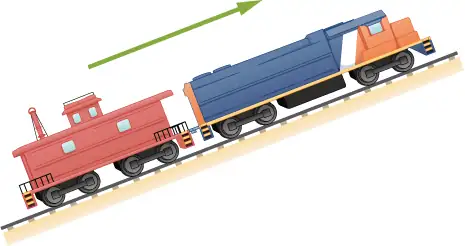
89. An electron is moving in a straight line with a velocity of \(4.0\:\times\:{10}^{5}\) m/s. It enters a region 5.0 cm long where it undergoes an acceleration of \(6.0\:\times\:{10}^{12}\:\text{m/s}^{2}\) along the same straight line. (a) What is the electron’s velocity when it emerges from this region? b) How long does the electron take to cross the region?
Answer
a.
\(v=8.7\:\times\:{10}^{5}\:\text{m/s}\);
b. \(t=7.8\:\times\:{10}^{-8}\:\text{s}\)
90. An ambulance driver is rushing a patient to the hospital. While traveling at 72 km/h, she notices the traffic light at the upcoming intersections has turned amber. To reach the intersection before the light turns red, she must travel 50 m in 2.0 s. (a) What minimum acceleration must the ambulance have to reach the intersection before the light turns red? (b) What is the speed of the ambulance when it reaches the intersection?
91. A motorcycle that is slowing down uniformly covers 2.0 successive km in 80 s and 120 s, respectively. Calculate (a) the acceleration of the motorcycle and (b) its velocity at the beginning and end of the 2-km trip.
Answer
\(1\:\text{km}=v_{0}(80.0\:\text{s})+\frac{1}{2}a{(80.0)}^{2}\); \(2\:\text{km}=v_{0}(200.0)+\frac{1}{2}a{(200.0)}^{2}\) solve simultaneously to get \(a=-\frac{0.1}{2400.0}\text{km/s}^{2}\) and \(v_{0}=0.014167\:\text{km/s}\), which is \(51.0\:\text{km/h}\). Velocity at the end of the trip is \(v=21.0\:\text{km/h}\).
92. A cyclist travels from point A to point B in 10 min. During the first 2.0 min of her trip, she maintains a uniform acceleration of \(0.090\:\text{m/s}^{2}\). She then travels at constant velocity for the next 5.0 min. Next, she accelerates opposite to the motion at a constant rate so that she comes to a rest at point B 3.0 min later. (a) Sketch the velocity-versus-time graph for the trip. (b) What is the acceleration during the last 3 min? (c) How far does the cyclist travel?
93. Two trains are moving at 30 m/s in opposite directions on the same track. The engineers see simultaneously that they are on a collision course and apply the brakes when they are 1000 m apart. Assuming both trains have the same acceleration, what must this acceleration be if the trains are to stop just short of colliding?
Answer
\(a=-0.9\:\text{m/s}^{2}\)
94. A 10.0-m-long truck moving with a constant velocity of 97.0 km/h passes a 3.0-m-long car moving with a constant velocity of 80.0 km/h. How much time elapses between the moment the front of the truck is even with the back of the car and the moment the back of the truck is even with the front of the car?
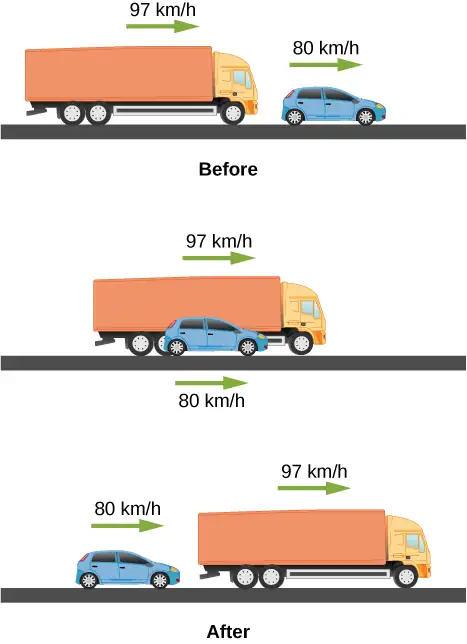
95. A police car waits in hiding slightly off the highway. A speeding car is spotted by the police car doing 40 m/s. At the instant the speeding car passes the police car, the police car accelerates from rest at 4 m/s2 to catch the speeding car. How long does it take the police car to catch the speeding car?
Answer
Equation for the speeding car: This car has a constant velocity, which is the average velocity, and is not accelerating, so use the equation for displacement with \(x_{0}=0\):\(x=x_{0}+\bar{v}t=\bar{v}t\); Equation for the police car: This car is accelerating, so use the equation for displacement with \(x_{0}=0\) and \(v_{0}=0\), since the police car starts from rest: \(x=x_{0}+v_{0}t+\frac{1}{2}at^{2}=\frac{1}{2}at^{2}\); Now we have an equation of motion for each car with a common parameter, which can be eliminated to find the solution. In this case, we solve for \(t\). Step 1, eliminating \(x\): \(x=\bar{v}t=\frac{1}{2}at^{2}\); Step 2, solving for \(t\): \(t=\frac{2\bar{v}}{a}\). The speeding car has a constant velocity of 40 m/s, which is its average velocity. The acceleration of the police car is 4 m/s2. Evaluating t, the time for the police car to reach the speeding car, we have \(t=\frac{2\bar{v}}{a}=\frac{2(40)}{4}=20\:\text{s}\).
96. Pablo is running in a half marathon at a velocity of 3 m/s. Another runner, Jacob, is 50 meters behind Pablo with the same velocity. Jacob begins to accelerate at 0.05 m/s2. (a) How long does it take Jacob to catch Pablo? (b) What is the distance covered by Jacob? (c) What is the final velocity of Jacob?
97. Unreasonable results A runner approaches the finish line and is 75 m away; her speed at this position is 8 m/s. She accelerates opposite to the motion at this point at 0.5 m/s2. How long does it take her to cross the finish line from 75 m away? Is this reasonable?
Answer
At this acceleration she comes to a full stop in \(t=\frac{-v_{0}}{a}=\frac{8}{0.5}=16\:\text{s}\), but the distance covered is \(x=8\:\text{m/s(16}\:\text{s)}-\frac{1}{2}(0.5){(16\:\text{s})}^{2}=64\:\text{m}\), which is less than the distance she is away from the finish line, so she never finishes the race.
98. An airplane accelerates at 5.00 m/s2 for 30.0 s. During this time, it covers a distance of 10.0 km. What are the initial and final velocities of the airplane?
99. Compare the distance traveled of an object that undergoes a change in velocity that is twice its initial velocity with an object that changes its velocity by four times its initial velocity over the same time period. The accelerations of both objects are constant.
Answer
\(x_{1}=\frac{3}{2}v_{0}t\)
\(x_{2}=\frac{5}{3}x_{1}\)
100. An object is moving east with a constant velocity and is at position \(x_{0}\:\text{at}\:\text{time}\:t_{0}=0\). (a) With what acceleration must the object have for its total displacement to be zero at a later time t ? (b) What is the physical interpretation of the solution in the case for \(t\rightarrow\infty\)?
101. A ball is thrown straight up. It passes a 2.00-m-high window 7.50 m off the ground on its path up and takes 1.30 s to go past the window. What was the ball’s initial velocity?
Answer
\(v_{0}=7.9\:\text{m/s}\) velocity at the bottom of the window.
\(v=7.9\:\text{m/s}\)
\(v_{0}=14.5\:\text{m/s}\)
102. A coin is dropped from a hot-air balloon that is 300 m above the ground and rising at 10.0 m/s upward. For the coin, find (a) the maximum height reached, (b) its position and velocity 4.00 s after being released, and (c) the time before it hits the ground.
103. A soft tennis ball is dropped onto a hard floor from a height of 1.50 m and rebounds to a height of 1.10 m. (a) Calculate its velocity just before it strikes the floor. (b) Calculate its velocity just after it leaves the floor on its way back up. (c) Calculate its acceleration during contact with the floor if that contact lasts 3.50 ms \((3.50\:\times\:{10}^{-3}\:\text{s})\) (d) How much did the ball compress during its collision with the floor, assuming the floor is absolutely rigid?
Answer
a. \(v=5.42\:\text{m/s}\);
b. \(v=4.64\:\text{m/s}\);
c. \(a=2874.28\:\text{m/s}^{2}\);
d. \((x-x_{0})=5.11\:\times\:{10}^{-3}\:\text{m}\)
104. Unreasonable results. A raindrop falls from a cloud 100 m above the ground. Neglect air resistance. What is the speed of the raindrop when it hits the ground? Is this a reasonable number?
105. Compare the time in the air of a basketball player who jumps 1.0 m vertically off the floor with that of a player who jumps 0.3 m vertically.
Answer
Consider the players fall from rest at the height 1.0 m and 0.3 m.
0.9 s
0.5 s
106. Suppose that a person takes 0.5 s to react and move his hand to catch an object he has dropped. (a) How far does the object fall on Earth, where \(g=9.8\:\text{m/s}^{2}?\) (b) How far does the object fall on the Moon, where the acceleration due to gravity is 1/6 of that on Earth?
107. A hot-air balloon rises from ground level at a constant velocity of 3.0 m/s. One minute after liftoff, a sandbag is dropped accidentally from the balloon. Calculate (a) the time it takes for the sandbag to reach the ground and (b) the velocity of the sandbag when it hits the ground.
Answer
a. \(t=6.37\:\text{s}\) taking the positive root;
b. \(v=59.5\:\text{m/s}\)
108. (a) A world record was set for the men’s 100-m dash in the 2008 Olympic Games in Beijing by Usain Bolt of Jamaica. Bolt “coasted” across the finish line with a time of 9.69 s. If we assume that Bolt accelerated for 3.00 s to reach his maximum speed, and maintained that speed for the rest of the race, calculate his maximum speed and his acceleration. (b) During the same Olympics, Bolt also set the world record in the 200-m dash with a time of 19.30 s. Using the same assumptions as for the 100-m dash, what was his maximum speed for this race?
109. An object is dropped from a height of 75.0 m above ground level. (a) Determine the distance traveled during the first second. (b) Determine the final velocity at which the object hits the ground. (c) Determine the distance traveled during the last second of motion before hitting the ground.
Answer
a. \(y=4.9\:\text{m}\);
b. \(v=38.3\:\text{m/s}\);
c. \(-33.3\:\text{m}\)
110. A steel ball is dropped onto a hard floor from a height of 1.50 m and rebounds to a height of 1.45 m. (a) Calculate its velocity just before it strikes the floor. (b) Calculate its velocity just after it leaves the floor on its way back up. (c) Calculate its acceleration during contact with the floor if that contact lasts 0.0800 ms \((8.00\:\times\:{10}^{-5}\:\text{s})\) (d) How much did the ball compress during its collision with the floor, assuming the floor is absolutely rigid?
111. An object is dropped from a roof of a building of height h. During the last second of its descent, it drops a distance h/3. Calculate the height of the building.
Answer
\(h=\frac{1}{2}gt^{2}\), h = total height and time to drop to ground
\(\frac{2}{3}h=\frac{1}{2}g{(t-1)}^{2}\) in t – 1 seconds it drops 2/3h
\(\frac{2}{3}\left( \frac{1}{2}gt^{2} \right)=\frac{1}{2}g{(t-1)}^{2}\) or \(\frac{t^{2}}{3}=\frac{1}{2}{(t-1)}^{2}\)
\(0=t^{2}-6t+3\) \(t=\frac{6\pm\sqrt{6^{2}-4\cdot 3}}{2}=3\pm\frac{\sqrt{24}}{2}\)
t = 5.45 s and h = 145.5 m. Other root is less than 1 s. Check for t = 4.45 s \(h=\frac{1}{2}gt^{2}=97.0\) m \(=\frac{2}{3}(145.5)\)
Challenge Problems¶
112. In a 100-m race, the winner is timed at 11.2 s. The second-place finisher’s time is 11.6 s. How far is the second-place finisher behind the winner when she crosses the finish line? Assume the velocity of each runner is constant throughout the race.
113. The position of a particle moving along the x-axis varies with time according to \(x(t)=5.0t^{2}-4.0t^{3}\) m. Find (a) the velocity and acceleration of the particle as functions of time, (b) the velocity and acceleration at t = 2.0 s, (c) the time at which the position is a maximum, (d) the time at which the velocity is zero, and (e) the maximum position.
Answer
a. \(v(t)=10t-12t^{2}\text{m/s,}\:a(t)=10-24t\:\text{m/s}^{2}\);
b. \(v(2\:\text{s})=-28\:\text{m/s,}\:a(2\:\text{s})=-38\text{m/s}^{2}\); c. The slope of the position function is zero or the velocity is zero. There are two possible solutions: t = 0, which gives x = 0, or t = 10.0/12.0 = 0.83 s, which gives x = 1.16 m. The second answer is the correct choice; d. 0.83 s (e) 1.16 m
114. A cyclist sprints at the end of a race to clinch a victory. She has an initial velocity of 11.5 m/s and accelerates at a rate of 0.500 m/s2 for 7.00 s. (a) What is her final velocity? (b) The cyclist continues at this velocity to the finish line. If she is 300 m from the finish line when she starts to accelerate, how much time did she save? (c) The second-place winner was 5.00 m ahead when the winner started to accelerate, but he was unable to accelerate, and traveled at 11.8 m/s until the finish line. What was the difference in finish time in seconds between the winner and runner-up? How far back was the runner-up when the winner crossed the finish line?
115. In 1967, New Zealander Burt Munro set the world record for an Indian motorcycle, on the Bonneville Salt Flats in Utah, of 295.38 km/h. The one-way course was 8.00 km long. Acceleration rates are often described by the time it takes to reach 96.0 km/h from rest. If this time was 4.00 s and Burt accelerated at this rate until he reached his maximum speed, how long did it take Burt to complete the course?
Answer
\(96\:\text{km/h}=26.67\:\text{m/s,}\:a=\frac{26.67\:\text{m/s}}{4.0\:\text{s}}=6.67\text{m/s}^{2}\), 295.38 km/h = 82.05 m/s, \(t=12.3\:\text{s}\) time to accelerate to maximum speed
\(x=504.55\:\text{m}\) distance covered during acceleration
\(7495.44\:\text{m}\) at a constant speed
\(\frac{7495.44\:\text{m}}{82.05\:\text{m/s}}=91.35\:\text{s}\) so total time is \(91.35\:\text{s}+12.3\:\text{s}=103.65\:\text{s}\).
Adapted from University Physics Volume 1 by OpenStax, licensed under CC BY 4.0. Access the original for free at openstax.org. Changes: converted to the web reading format of The Open Book Project.